<!doctype html>
<html lang="en">
<head>
  <meta charset="utf-8">
  <meta name="viewport" content="width=device-width, initial-scale=1">
  <title>arxiv digest — 2026-10-23</title>
  <style>
:root {
  --bg: #ffffff;
  --fg: #1f2328;
  --muted: #59636e;
  --border: #d0d7de;
  --card: #f6f8fa;
  --link: #0969da;
}
body {
  max-width: 980px;
  margin: 0 auto;
  padding: 2rem 1rem 5rem;
  font-family: -apple-system, BlinkMacSystemFont, "Segoe UI", Helvetica, Arial, sans-serif;
  line-height: 1.55;
  color: var(--fg);
  background: var(--bg);
}
a { color: var(--link); }
img { max-width: 100%; height: auto; }
pre, code { background: var(--card); border-radius: 6px; }
pre { padding: 1rem; overflow-x: auto; }
blockquote { border-left: 4px solid var(--border); padding-left: 1rem; color: var(--muted); }
details { margin: 0.6rem 0; }
summary { cursor: pointer; font-weight: 600; }
.paper-figures-scroll {
  display: flex;
  gap: 1rem;
  overflow-x: auto;
  overscroll-behavior-x: contain;
  padding: 0.75rem 0.25rem 1rem;
  margin: 1rem 0 1.25rem;
  border-top: 1px solid var(--border);
  border-bottom: 1px solid var(--border);
  scroll-snap-type: x proximity;
}
.paper-figure-card {
  flex: 0 0 min(260px, 72vw);
  scroll-snap-align: start;
  background: var(--card);
  border: 1px solid var(--border);
  border-radius: 12px;
  padding: 0.55rem;
}
.paper-figure-card img {
  display: block;
  width: 100%;
  max-height: 240px;
  object-fit: contain;
  background: white;
  border-radius: 8px;
}
.paper-figure-caption {
  display: block;
  margin-top: 0.5rem;
  color: var(--muted);
  font-size: 0.85rem;
}
.figure-strip-hint {
  color: var(--muted);
  font-size: 0.9rem;
  margin-bottom: -0.3rem;
}
</style>
  <script>
    window.MathJax = {
      tex: {
        inlineMath: [['$', '$'], ['\\(', '\\)']],
        displayMath: [['$$', '$$'], ['\\[', '\\]']],
        processEscapes: true,
        processEnvironments: true
      },
      options: {
        skipHtmlTags: ['script', 'noscript', 'style', 'textarea', 'pre', 'code'],
        ignoreHtmlClass: 'tex2jax_ignore',
        processHtmlClass: 'tex2jax_process'
      }
    };
  </script>
  <script id="MathJax-script" async
    src="https://cdn.jsdelivr.net/npm/mathjax@3/es5/tex-chtml.js"></script>
</head>
<body>
<header style="background-color: #333; color: white; padding: 15px; margin-bottom: 20px;">
  <h1 style="margin: 0; font-size: 24px;">
    <a href="https://ochelpan.github.io/arXiv_clean/" style="color: white; text-decoration: none;">Main</a>
  </h1>
</header>

<h1>Daily arXiv Report</h1>

<hr>
<p>
<a href="index.html">← Index</a>
 · <a href="papers_04.html">← Previous</a> · <a href="papers_06.html">Next →</a>
</p>
<hr>

<h2>Papers 81–100</h2>
<p><a id="paper-2610.30040"></a></p>
<h3 id="an-entanglement-band-structure-for-general-multiqubit-states"><a href="http://arxiv.org/abs/2610.30040v1">An entanglement band structure for general multiqubit states</a></h3>
<p><strong>Authors:</strong> Chon-Fai Kam<br>
<strong>Type:</strong> theory · <strong>Category:</strong> quantum information and computing · <strong>PDF:</strong> <a href="https://arxiv.org/pdf/2610.30040v1">https://arxiv.org/pdf/2610.30040v1</a><br>
<strong>Analysis basis:</strong> full PDF text, analyzed in chunks</p>
<div class="figure-strip-hint">↔ Scroll figures horizontally</div>
<div class="paper-figures-scroll">
<figure class="paper-figure-card">
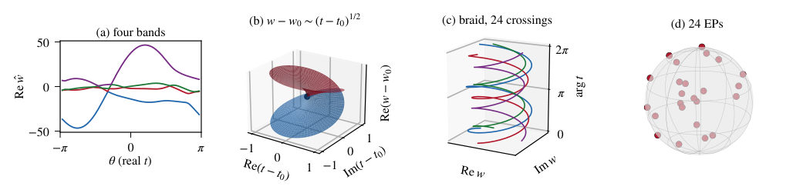
<figcaption class="paper-figure-caption"><b>Fig 1.</b> FIG. 1. Entanglement bands of the state Ψ0 of the Supplemental Material [22], with the fifth qubit projected and the split 12|34. (a) Real parts of the four bands along the great circle of real t, divided by 1 + t2. No exceptional point lies on this circle, so every crossing is one of real parts only. (b) Near an exceptional point t0, where two bands meet at w0, they form a square-root sheet, with t −t0 in units of the disc radius. (c) Around a loop enclosing all exceptional points the bands braid with 24 crossings of one sign, the (4, 8) torus link, shown after a radial rescaling that leaves the braid unchanged. (d) The 24 exceptional points on the Bloch sphere.</figcaption>
</figure>
<figure class="paper-figure-card">
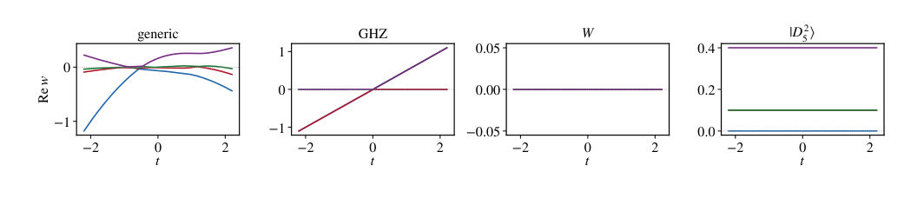
<figcaption class="paper-figure-caption"><b>Fig 2.</b> FIG. 2. Real parts of the bands along real t, without the division by 1 + t2 of Fig. 1(a), for a generic five-qubit state and for the GHZ, W and Dicke states. The generic bands braid into one surface, while the curves of the named states fall apart into copies of the sphere.</figcaption>
</figure>
</div>
<p><strong>Summary.</strong> This theoretical work develops an 'entanglement band structure' to classify general multiqubit quantum states. It shows that by projecting one qubit, the entanglement invariants form bands whose topology is encoded in a spectral curve $C$. This curve's genus and the behavior around exceptional points provide deep, geometric invariants for the state's entanglement class.</p>
<p><strong>Why it may be interesting.</strong> The use of spectral curves and topological invariants (genus, Riemann surfaces) to classify quantum states provides a powerful, geometry-based tool for understanding entanglement beyond simple measures.</p>
<details>
<summary>Detailed structure</summary>
<p><strong>Main problem.</strong> The paper aims to characterize the entanglement structure of general multiqubit states by extending Majorana's construction to analyze conditional states resulting from projecting only one qubit.</p>
<p><strong>Main result.</strong> The entanglement invariants form 'entanglement bands' whose structure is governed by a spectral curve $C$ with a genus determined by the number of qubits, and these bands exhibit predictable topological behavior around exceptional points.</p>
<p><strong>Method.</strong> The analysis involves defining entanglement invariants as eigenvalues of a non-Hermitian matrix $L(u)$ derived from the conditional state. The structure is then mapped onto a spectral curve $C$ in complex geometry.</p>
<p><strong>Model / system.</strong> The system under study is general multiqubit states ($\Psi$), with specific focus on five-qubit systems. The analysis centers on the conditional state remaining after projecting one qubit onto a specific basis state.</p>
<p><strong>Key observables.</strong> Entanglement invariants (eigenvalues of $L(u)$), Exceptional Points (EPs), the spectral curve $C$, and its genus ($g$).</p>
<p><strong>Important parameters / regimes.</strong> The number of qubits ($N$), the projection direction on the Bloch sphere, and the topological winding number around EPs.</p>
<p><strong>Assumptions / limitations.</strong> The analysis assumes the conditional state belongs to a generic family ($    ext{Gabcd}$) and relies on algebraic structures derived from the matrix $L(u)$.</p>
<p><strong>Figures summary.</strong> Figures illustrate the entanglement bands over the Bloch sphere, the structure near an EP, the resulting braid structure forming a Riemann surface, and the locations of the EPs.</p>
<p><strong>Paper structure.</strong> The paper develops the mathematical framework by defining the band structure via $L(u)$, analyzing its topological properties (Riemann surface, genus), and comparing the resulting spectral curve $C$ to known invariants of the state class.</p>
</details>
<details>
<summary>Abstract</summary>
<p>Majorana drew a symmetric multiqubit state as points on the Bloch sphere, antipodal to the zeros of its overlap with spin coherent states. Projecting only one qubit of a general state leaves the others in a state that varies with direction. Its entanglement invariants are eigenvalues of a non-Hermitian matrix and form bands over the sphere. Exceptional points appear, without gain or loss, where the entanglement family of the rest changes. Circling one exchanges two bands, so the bands form one Riemann surface. At five qubits it fixes the entanglement class up to finitely many choices.</p>
</details>
<p><sub><a href="#top">↑ back to top</a></sub></p>

<p><a id="paper-2610.28964"></a></p>
<h3 id="can-quantum-layers-offer-performance-and-security-advantages-in-vision-language-models"><a href="http://arxiv.org/abs/2610.28964v1">Can Quantum Layers offer Performance and Security Advantages in Vision-Language Models?</a></h3>
<p><strong>Authors:</strong> Md Khalid Syfullah, Alvi Ataur Khalil<br>
<strong>Type:</strong> both · <strong>Category:</strong> other · <strong>PDF:</strong> <a href="https://arxiv.org/pdf/2610.28964v1">https://arxiv.org/pdf/2610.28964v1</a><br>
<strong>Analysis basis:</strong> full PDF text, analyzed in chunks</p>
<div class="figure-strip-hint">↔ Scroll figures horizontally</div>
<div class="paper-figures-scroll">
<figure class="paper-figure-card">
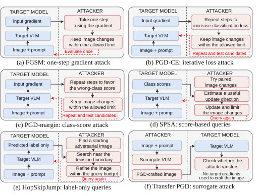
<figcaption class="paper-figure-caption"><b>Fig 1.</b> Fig. 1. Overview and access level of the attack methods used in this work.</figcaption>
</figure>
<figure class="paper-figure-card">
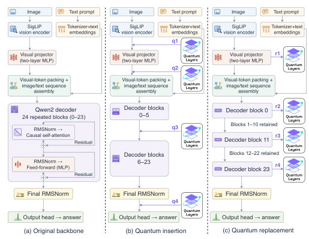
<figcaption class="paper-figure-caption"><b>Fig 2.</b> Fig. 2. Proposed framework showing the LLaVA-OneVision-Qwen2-0.5B-SI backbone and quantum-layer insertion and replacement locations.</figcaption>
</figure>
<figure class="paper-figure-card">
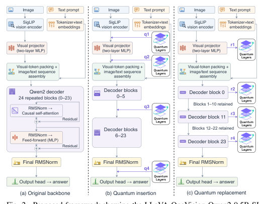
<figcaption class="paper-figure-caption"><b>Fig 3.</b> Fig. 2 shows the proposed framework for quantum insertion and replacement in backbone VLM. The vision encoder uses Sigmoid Loss for Language-Image Pre-training (SigLIP), and the decoder uses root mean square normalization (RMSNorm).</figcaption>
</figure>
<figure class="paper-figure-card">
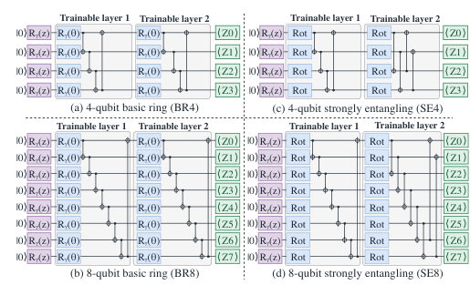
<figcaption class="paper-figure-caption"><b>Fig 4.</b> Fig. 3. Four quantum circuits used in this study. to every qubit, then uses CNOT gates whose connection range changes from layer to layer.</figcaption>
</figure>
<figure class="paper-figure-card">
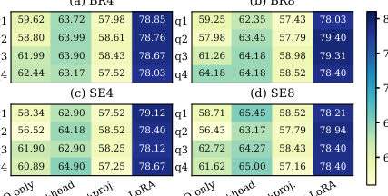
<figcaption class="paper-figure-caption"><b>Fig 5.</b> Fig. 4. Accuracy (%) across quantum insertion training modes.</figcaption>
</figure>
</div>
<p><strong>Summary.</strong> This paper explores the feasibility of enhancing Vision-Language Models (VLMs) by integrating quantum layers, using classical simulations of quantum circuits. The research found that quantum integration can boost accuracy or reduce model size depending on where the layer is placed. It provides a detailed map of where quantum components might offer benefits, though the gains are not universally guaranteed.</p>
<p><strong>Why it may be interesting.</strong> While the focus is on AI, the methodology involves mapping quantum circuit structures (basic-ring, strongly entangling) onto deep learning architectures, which touches upon the concept of quantum information processing within complex computational models.</p>
<details>
<summary>Detailed structure</summary>
<p><strong>Main problem.</strong> The study investigates whether integrating quantum layers into Vision-Language Models (VLMs) can yield performance or security advantages over purely classical architectures.</p>
<p><strong>Main result.</strong> Quantum insertion can improve accuracy, and selective replacement can reduce trainable parameters, but these benefits are highly dependent on the layer's specific location within the VLM.</p>
<p><strong>Method.</strong> The authors used classically simulated quantum circuits (4- and 8-qubit) to test both inserting and replacing classical components within a VLM backbone, while also evaluating adversarial robustness.</p>
<p><strong>Model / system.</strong> The system is a Vision-Language Model (VLM), specifically using LLaVA-OneVision as the backbone, augmented with quantum-classical hybrid layers.</p>
<p><strong>Key observables.</strong> Predictive accuracy (e.g., 80.7% on Visual Spatial Reasoning), reduction in trainable parameters (e.g., 13.07 million fewer), and adversarial robustness under six attack settings.</p>
<p><strong>Important parameters / regimes.</strong> Qubit count (4- and 8-qubits), circuit type (basic-ring, strongly entangling), and insertion/replacement locations within the VLM structure.</p>
<p><strong>Assumptions / limitations.</strong> The study relies on classical simulation of quantum layers, and the observed gains may not generalize to actual quantum hardware or different model architectures.</p>
<p><strong>Figures summary.</strong> Figures illustrate the proposed framework showing quantum layer insertion and replacement locations in the VLM backbone, and detail the specific quantum circuits used (BR4, BR8, SE4, SE8).</p>
<p><strong>Paper structure.</strong> The paper systematically tests quantum layer integration via insertion and replacement across multiple VLM components, comparing performance, computational cost, and robustness against various adversarial attacks.</p>
</details>
<details>
<summary>Abstract</summary>
<p>As quantum computing moves from the noisy intermediate-scale quantum (NISQ) era toward early fault-tolerant quantum computing (EFTQC), quantum-enhanced AI is shifting from a conceptual idea to experimental research. Quantum components are expected to extend the capabilities of existing AI systems, yet it remains unclear how such components will help within large multimodal models. In this study, we try to answer that question for vision-language models (VLMs) using classically simulated quantum layers. With LLaVA-OneVision as the backbone, we evaluate 4- and 8-qubit basic-ring and strongly entangling circuits at four insertion and four replacement locations. Insertion adds quantum layers to the classical model, while replacement substitutes them for classical components. Using the same setup, we compare performance and computational cost between classical and quantum-classical hybrid models. On the Visual Spatial Reasoning dataset, inserting a quantum layer after the visual projector reaches 80.7% development accuracy, 2.28 percentage-points above classical full fine-tuning. Replacing the final decoder feed-forward sublayer retains 79.22% accuracy with 13.07 million fewer trainable parameters. Quantum insertion can thus improve accuracy, and selective replacement can reduce parameters. These benefits depend strongly on where the quantum layer is inserted or which classical component it replaces: earlier replacements lower accuracy, and fewer parameters do not reliably shorten training or reduce computation. To assess potential security benefits, we evaluated the robustness of quantum-classical hybrid models under six attack settings. Overall, our study maps where quantum layers help and hurt within VLMs, offering a starting point for hybrid VLM design; whether these gains generalize remains open. The code is available at https://github.com/TITANS-Lab-Artifacts/QuantumVLM.</p>
</details>
<p><sub><a href="#top">↑ back to top</a></sub></p>

<p><a id="paper-2610.29095"></a></p>
<h3 id="fast-template-matching-for-quantum-circuits-using-hypergraph"><a href="http://arxiv.org/abs/2610.29095v1">Fast Template Matching for Quantum Circuits Using Hypergraph</a></h3>
<p><strong>Authors:</strong> Xin Hong, Jintao Yu, Runhong He, Shenggang Ying, Sanjiang Li, Mingsheng Ying<br>
<strong>Type:</strong> theory · <strong>Category:</strong> quantum information and computing · <strong>PDF:</strong> <a href="https://arxiv.org/pdf/2610.29095v1">https://arxiv.org/pdf/2610.29095v1</a><br>
<strong>Analysis basis:</strong> full PDF text, analyzed in chunks</p>
<div class="figure-strip-hint">↔ Scroll figures horizontally</div>
<div class="paper-figures-scroll">
<figure class="paper-figure-card">
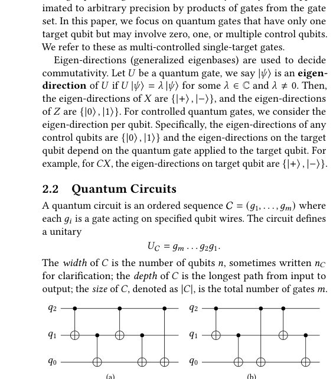
<figcaption class="paper-figure-caption"><b>Fig 1.</b> Figure 1: Two equivalent quantum circuits consisting of 3 qubits and 5 gates. Both circuits implement the identity ma- trix.</figcaption>
</figure>
<figure class="paper-figure-card">
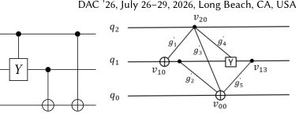
<figcaption class="paper-figure-caption"><b>Fig 2.</b> Figure 4: A quantum circuit with 3 qubits and 5 gates and its hypergraph representation. We omitted the labels 𝑣11 and 𝑣12 here.</figcaption>
</figure>
<figure class="paper-figure-card">
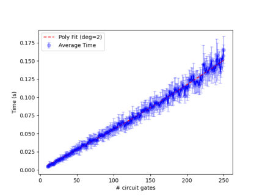
<figcaption class="paper-figure-caption"><b>Fig 3.</b> Figure 5: Average optimisation time for 6-qubit random cir- cuits (15 runs per point). Error bars show standard deviation.</figcaption>
</figure>
</div>
<p><strong>Summary.</strong> This paper presents a novel Hypergraph (HG) representation for quantum circuits to improve template matching for optimization. By collapsing commuting gates into super-nodes while retaining local connectivity, the HG matcher significantly outperforms existing DAG-based methods. This breakthrough promises scalable and efficient circuit simplification for quantum algorithm execution.</p>
<p><strong>Why it may be interesting.</strong> While focused on circuit optimization, the underlying graph theory and the need to efficiently represent complex, constrained relationships (like gate commutation) are relevant to modeling interactions in quantum many-body systems.</p>
<details>
<summary>Detailed structure</summary>
<p><strong>Main problem.</strong> The paper addresses the challenge of efficiently optimizing quantum circuits through template matching while correctly accounting for gate commutativity.</p>
<p><strong>Main result.</strong> The proposed Hypergraph (HG) matcher achieves massive speed-ups (up to 606x) over state-of-the-art DAG-based methods on both random and arithmetic benchmarks.</p>
<p><strong>Method.</strong> It introduces a hypergraph representation that collapses commuting gates into super-nodes while preserving local connectivity, enabling a localized and efficient subgraph isomorphism search for matching.</p>
<p><strong>Model / system.</strong> The system modeled is a quantum circuit, represented as an ordered sequence of quantum gates acting on multiple qubits. The optimization process aims to simplify this circuit structure.</p>
<p><strong>Key observables.</strong> Optimization quality (gate count reduction), computational complexity, and execution time (speed-up factor).</p>
<p><strong>Important parameters / regimes.</strong> Circuit size (number of qubits and gates), and the degree of gate commutation.</p>
<p><strong>Assumptions / limitations.</strong> The HG representation is proven canonical only for circuits composed solely of multi-controlled single-target gates.</p>
<p><strong>Figures summary.</strong> Figures illustrate the equivalence of circuits and their representation in the hypergraph format, while tables compare the speed-up and gate reduction achieved by the HG method versus existing DAG-based matchers.</p>
<p><strong>Paper structure.</strong> The paper first identifies the limitations of DAG-based matching, then introduces the HG representation to solve the locality problem, details the HG construction and matching algorithm, and finally validates the approach with extensive experimental comparisons against state-of-the-art tools.</p>
</details>
<details>
<summary>Abstract</summary>
<p>Quantum circuit optimization is a key step toward the efficient execution of quantum algorithms. Template matching has emerged as one of the dominant approaches for simplifying quantum circuits, yet it confronts the intrinsic challenge of accommodating gate commutativity. The state-of-the-art template-matching algorithm relies on a directed acyclic graph (DAG) representation. While this DAG-based technique handles gate commutativity satisfactorily, it fails to preserve the local connectivity inherent to quantum circuits, thereby leading to relatively high matching complexity.   In this paper, we introduce a hypergraph representation (HG), a commutativity-aware representation that collapses commuting gates into a single super-node while retaining all local connectivity. This enables matches to be extended locally without revisiting the rest of the circuit, with incremental updates limited to the immediate neighborhood. Experimental results demonstrate that our HG matcher achieves 11--606x speed-up over the DAG-based implementation in Qiskit (Iten et al., 2022) on both random and arithmetic benchmarks, while maintaining the same optimization quality. The acceleration increases with circuit size, confirming that preserving locality and connectivity is the key to scalable quantum circuit optimisation.</p>
</details>
<p><sub><a href="#top">↑ back to top</a></sub></p>

<p><a id="paper-2610.29955"></a></p>
<h3 id="finite-classification-of-transversal-diagonal-gates-beyond-stabilizer-codes"><a href="http://arxiv.org/abs/2610.29955v1">Finite Classification of Transversal Diagonal Gates Beyond Stabilizer Codes</a></h3>
<p><strong>Authors:</strong> Xi He, Chao Zhang, Shilin Huang, Bei Zeng<br>
<strong>Type:</strong> theory · <strong>Category:</strong> quantum information and computing · <strong>PDF:</strong> <a href="https://arxiv.org/pdf/2610.29955v1">https://arxiv.org/pdf/2610.29955v1</a><br>
<strong>Analysis basis:</strong> full PDF text, analyzed in chunks</p>
<div class="figure-strip-hint">↔ Scroll figures horizontally</div>
<div class="paper-figures-scroll">
<figure class="paper-figure-card">
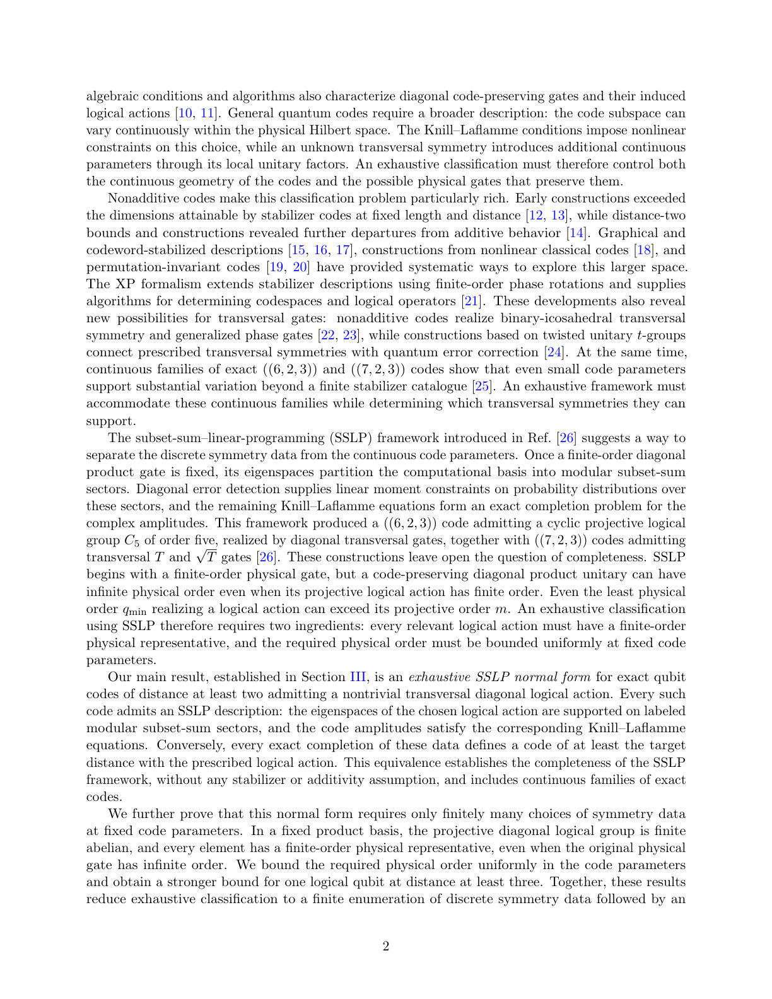
<figcaption class="paper-figure-caption"><b>Fig 1.</b> Low-resolution page preview, page 2</figcaption>
</figure>
<figure class="paper-figure-card">
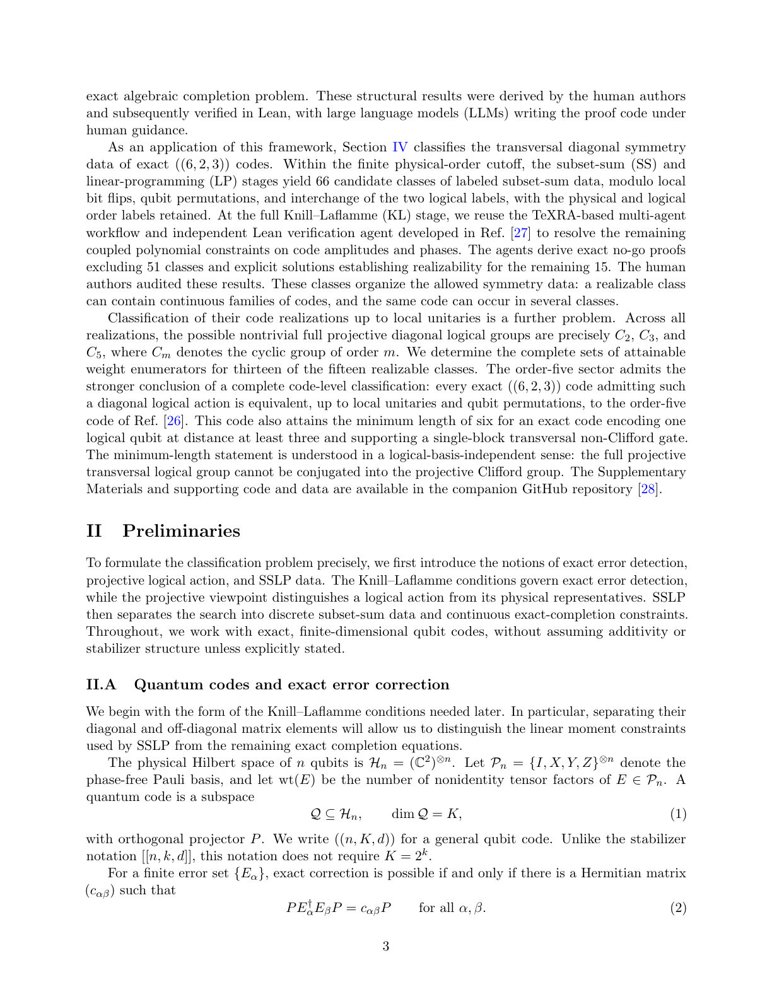
<figcaption class="paper-figure-caption"><b>Fig 2.</b> Low-resolution page preview, page 3</figcaption>
</figure>
<figure class="paper-figure-card">
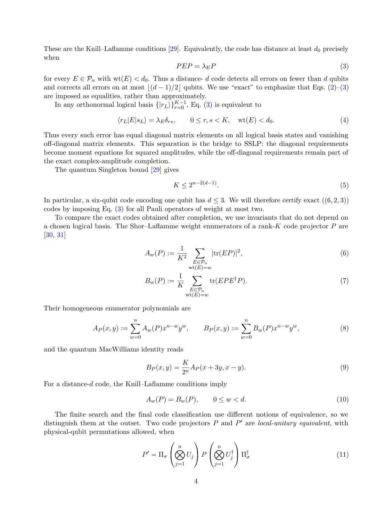
<figcaption class="paper-figure-caption"><b>Fig 3.</b> Low-resolution page preview, page 4</figcaption>
</figure>
<figure class="paper-figure-card">
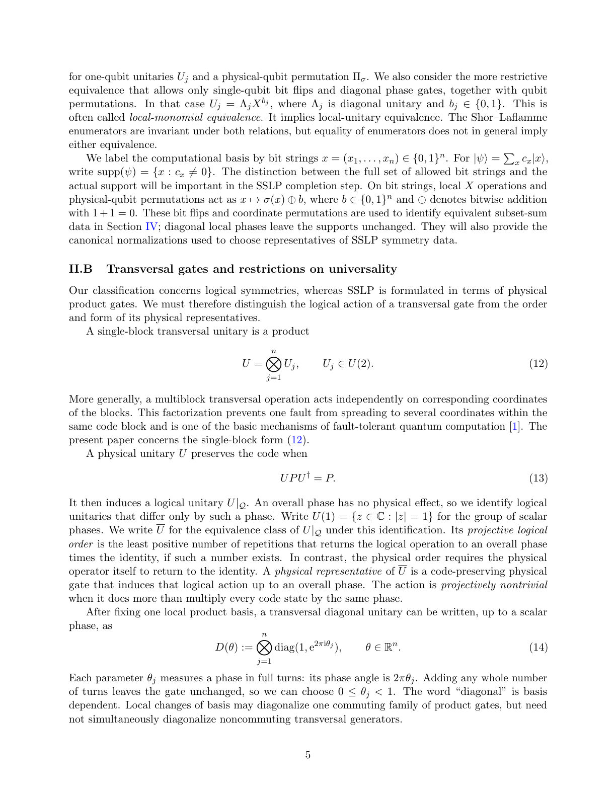
<figcaption class="paper-figure-caption"><b>Fig 4.</b> Low-resolution page preview, page 5</figcaption>
</figure>
<figure class="paper-figure-card">
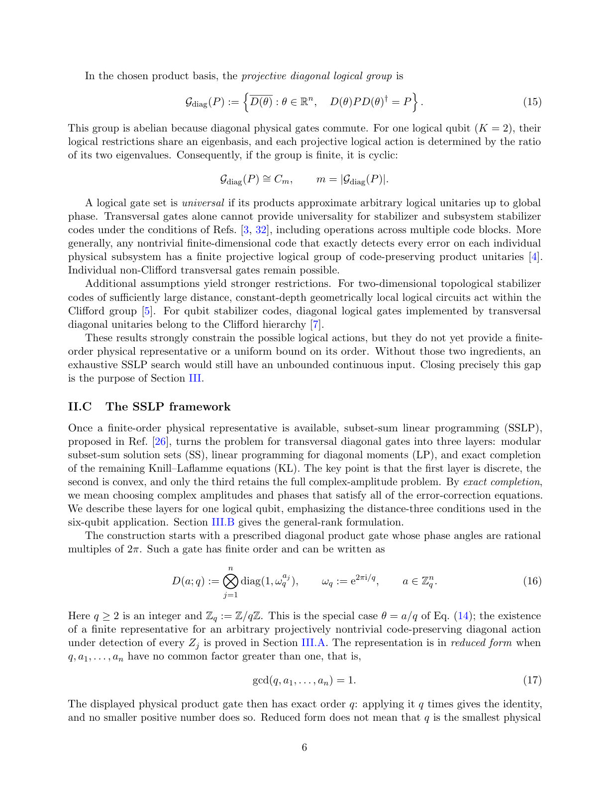
<figcaption class="paper-figure-caption"><b>Fig 5.</b> Low-resolution page preview, page 6</figcaption>
</figure>
</div>
<p><strong>Summary.</strong> This paper provides a complete, finite classification of transversal diagonal gates acting on quantum error-correcting codes. By developing and applying the SSLP framework, the authors prove that the physical order of these gates is bounded by code parameters. This advances the understanding of quantum computation by characterizing non-Clifford logical symmetries in codes beyond the standard stabilizer framework.</p>
<p><strong>Why it may be interesting.</strong> This work provides a rigorous, systematic mathematical framework for classifying quantum gates beyond the standard stabilizer model, which is crucial for understanding the full computational power of quantum codes.</p>
<details>
<summary>Detailed structure</summary>
<p><strong>Main problem.</strong> The paper aims to exhaustively classify transversal diagonal gates acting on exact qubit codes of distance at least two.</p>
<p><strong>Main result.</strong> The classification is shown to be finite, and for $((6,2,3))$ codes, the method identifies 15 realizable symmetry classes supporting logical cyclic groups of orders 2, 3, and 5.</p>
<p><strong>Method.</strong> It employs the subset-sum-linear-programming (SSLP) framework to separate discrete symmetry data from continuous code parameters, relying on the fact that the physical gate order is bounded by code parameters.</p>
<p><strong>Model / system.</strong> The system under study is abstract quantum error-correcting codes (qubit codes) defined by their parameters $((n, K, d))$, analyzed using the Knill–Laflamme conditions.</p>
<p><strong>Key observables.</strong> Projective logical action, physical gate order, and the existence of specific transversal diagonal symmetries (e.g., cyclic groups $C_2, C_3, C_5$).</p>
<p><strong>Important parameters / regimes.</strong> Code parameters $((n, K, d))$, the minimum length $n=6$ for certain non-Clifford supporting codes, and the order $q$ of the physical gate.</p>
<p><strong>Assumptions / limitations.</strong> The core assumption is that the projective logical action of a transversal diagonal gate can be realized by a physical gate of finite order, and this order is uniformly bounded by the code parameters.</p>
<p><strong>Figures summary.</strong> The notes do not describe specific figures, but mention mathematical results derived from equations (115) through (125) concerning code classes and minimum lengths.</p>
<p><strong>Paper structure.</strong> The structure moves from establishing the finite nature of the classification, detailing the SSLP methodology, applying this to specific code parameters like $((6,2,3))$, and concluding with the unique classification of the order-five sector.</p>
</details>
<details>
<summary>Abstract</summary>
<p>We establish that transversal diagonal gates on exact qubit codes of distance at least two can be exhaustively classified within a finite search space. Although code-preserving physical gates can have continuous phases, any projective logical action induced by a transversal diagonal gate can always be realized by a physical gate of finite order. Crucially, we prove that this physical order has an upper bound determined solely by the code parameters. This order bound enables the subset-sum-linear-programming (SSLP) framework introduced in arXiv:2504.20847 to exhaustively enumerate all candidate discrete symmetries, after which the Knill-Laflamme equations determine the remaining continuous code parameters. Applying this method to the nontrivial diagonal sector of exact $((6,2,3))$ codes, SSLP yields $66$ candidate symmetry classes, of which exactly $15$ are realizable, supporting full projective diagonal logical cyclic groups of orders $2$, $3$, and $5$. In particular, for order $5$, the code is unique up to local unitaries and qubit permutations, equivalent to the code constructed in arXiv:2504.20847. This code also attains the minimum length $n=6$ among exact $((n, 2, \ge 3))$ codes whose full projective transversal group cannot be conjugated into the projective Clifford group.</p>
</details>
<p><sub><a href="#top">↑ back to top</a></sub></p>

<p><a id="paper-2610.30087"></a></p>
<h3 id="injection-is-all-you-need-parallel-universal-logic-in-high-rate-concatenated-self-dual-codes"><a href="http://arxiv.org/abs/2610.30087v1">Injection is all you need: parallel universal logic in high-rate concatenated self-dual codes</a></h3>
<p><strong>Authors:</strong> Joseph Sullivan, David Amaro, Michael A. Perlin<br>
<strong>Type:</strong> theory · <strong>Category:</strong> quantum information and computing · <strong>PDF:</strong> <a href="https://arxiv.org/pdf/2610.30087v1">https://arxiv.org/pdf/2610.30087v1</a><br>
<strong>Analysis basis:</strong> full PDF text, analyzed in chunks</p>
<div class="figure-strip-hint">↔ Scroll figures horizontally</div>
<div class="paper-figures-scroll">
<figure class="paper-figure-card">
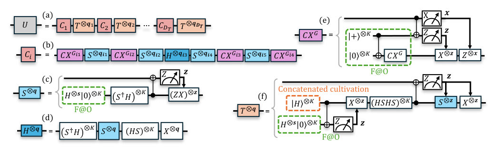
<figcaption class="paper-figure-caption"><b>Fig 1.</b> FIG. 1. The injection architecture employs the concatenation of small-distance self-dual SWEL codes [12, 16] that encode k &gt; 1 logical qubits. These codes have a transversal physical implementation of S⊗k and H⊗k logical gates. (a) Compilation of any unitary with T-depth DT into DT layers of Clifford gates Ci and products T ⊗qi of T gates acting on subsets of the K logical qubits of the final concatenated block. At most 12DT resource states are required to inject all logical gates and simultaneously perform quantum error correction (QEC): 9 for each Clifford layer and 3 for each T layer. (b) Bruhat’s decomposition of any Clifford circuit into 9 Clifford gates of three types: CXG is a...</figcaption>
</figure>
<figure class="paper-figure-card">
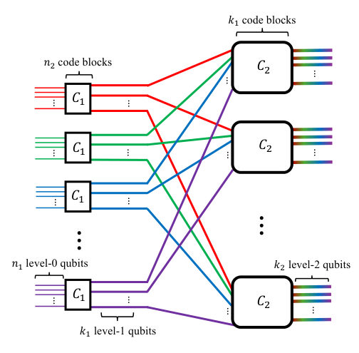
<figcaption class="paper-figure-caption"><b>Fig 2.</b> FIG. 2. Generalized tree style concatenation yielding k1k2 level-2 qubits: n2 blocks of C1 provide the level-1 qubits which are encoded into k1 blocks of C2. In a given C1 block each of the k1 level-1 qubits is allocated to a distinct C2 block.</figcaption>
</figure>
<figure class="paper-figure-card">
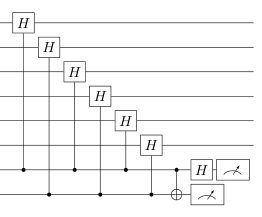
<figcaption class="paper-figure-caption"><b>Fig 3.</b> FIG. 3. FT |H⟩⊗2 state prep circuit for J6, 2, 2K. The dashed line separates the encoding circuit from the Hadamard mea- surement gadget.</figcaption>
</figure>
<figure class="paper-figure-card">
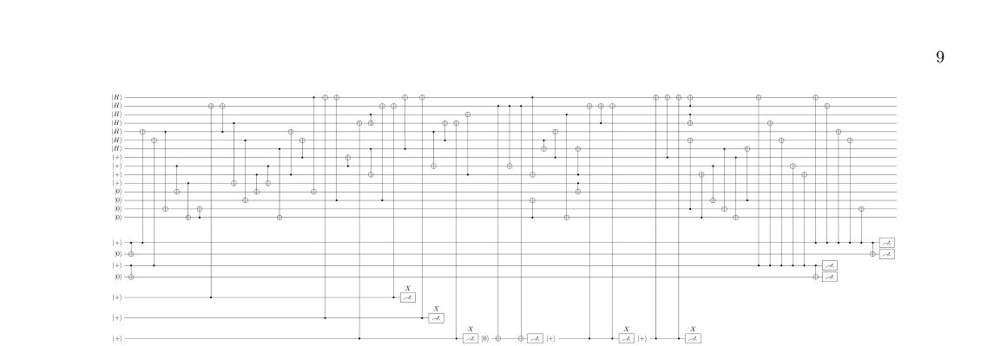
<figcaption class="paper-figure-caption"><b>Fig 4.</b> FIG. 4. Flagged encoder for |H⟩⊗7 in the J15, 7, 3K code obeying Condition 1. Appending Hadamard and stabilizer measurement gadgets makes the circuit FT. Measured-out qubits are post-selected on. See Appendix C for details about the construction of this circuit.</figcaption>
</figure>
<figure class="paper-figure-card">
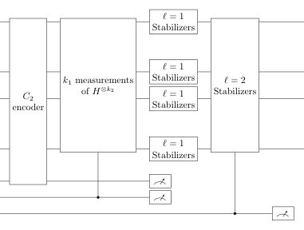
<figcaption class="paper-figure-caption"><b>Fig 5.</b> FIG. 5. Structure of the concatenated cultivation circuit for |H⟩⊗k1k2 2 . The input to the circuit is k2 |H⟩⊗k1 1 states, n2−k2 |0⟩⊗k1 1 states, and level-1 ancillas |anc⟩1 (as necessary).</figcaption>
</figure>
</div>
<p><strong>Summary.</strong> This paper details a novel architecture for achieving fault-tolerant, universal quantum computation by 'injecting' required logical gates rather than building them into the code structure. It leverages concatenated self-dual CSS codes and introduces efficient protocols like Flag-at-Origin and concatenated cultivation to manage resource state preparation. The work significantly advances the understanding of resource overheads for large-scale quantum computation.</p>
<p><strong>Why it may be interesting.</strong> This work provides a highly detailed, resource-aware blueprint for scaling fault-tolerant quantum computation, which is crucial for any theoretical physicist working on quantum computation or quantum information theory.</p>
<details>
<summary>Detailed structure</summary>
<p><strong>Main problem.</strong> The primary goal is to achieve addressable and parallel universal fault-tolerant quantum logic using high-rate quantum error-correcting (QEC) codes, specifically overcoming the 'addressability problem.'</p>
<p><strong>Main result.</strong> The authors propose an injection scheme using resource state consumption, demonstrating that any algorithm can be executed by consuming a polynomial number of resource states relative to its T-depth. They also show that concatenated cultivation offers significant spacetime reduction for magic state preparation.</p>
<p><strong>Method.</strong> The method involves decomposing quantum circuits into Clifford and T gate components, then implementing gates by fault-tolerantly preparing and consuming logical resource states (like $|	ext{H}
angle^{\otimes k}$ and $|	ext{S}
angle^{\otimes k}$) via specialized gadgets (Flag-at-Origin, Steane-QEC/Knill-QEC teleportation).</p>
<p><strong>Model / system.</strong> The system is based on quantum computation utilizing concatenated self-dual CSS codes, such as the H codes and Hamming codes, to encode logical qubits. The focus is on achieving fault tolerance for universal quantum computation.</p>
<p><strong>Key observables.</strong> Resource state consumption ($\le 12D_T$ states for $D_T$-depth), logical error rate suppression ($O(p^{2\ell})$), and cost ratios (depth/qubit cost) comparing precompilation vs. other methods.</p>
<p><strong>Important parameters / regimes.</strong> Concatenation level ($\ell$), physical error rate ($p$), and the number of logical qubits ($k$).</p>
<p><strong>Assumptions / limitations.</strong> The method assumes the availability of global logical Hadamard ($    ext{H}^{\otimes k}$) and Phase ($   ext{S}^{\otimes k}$) gates (SWEL codes) to simplify the injection of Clifford gates.</p>
<p><strong>Figures summary.</strong> Figures illustrate the injection architecture, showing how unitaries are compiled into Clifford and T layers, and how resource states are consumed. Tables provide quantitative comparisons of resource costs (depth, qubits) for different code types.</p>
<p><strong>Paper structure.</strong> The paper builds from establishing the necessity of resource states for Clifford gates (Theorem 1), extending this to universal computation via T-gate injection (Theorem 2), detailing resource state preparation protocols (Flag-at-Origin, concatenated cultivation), and finally analyzing the compilation and scheduling of circuits using sifting procedures.</p>
</details>
<details>
<summary>Abstract</summary>
<p>We propose a quantum architecture that achieves addressable and parallel universal fault-tolerant logical in high-rate codes. The codes are obtained from the flexible concatenation of small-distance high-rate self-dual CSS codes. Addressable and parallel universal logic on the resulting $K$ logical qubits is injected by fault-tolerantly preparing and then consuming diverse logical $K$-qubit CSS stabilizer states and logical $\lvert H \rangle^{\otimes K}$ global magic states. Flag-at-origin is used to prepare the stabilizer resource states while a concatenated cultivation protocol prepares the global magic states. These resource states are consumed by Steane-QEC or Knill-QEC teleportation gadgets, which simultaneously perform quantum error correction. Any quantum algorithm with $T$-depth $D_T$ can be executed by consuming $12D_T$ or fewer resource states. We benchmark the fault-tolerant preparation of the resource states for several two-level concatenations of the $[[k+4,k,2]]$ H codes and the Hamming $[[15,7,3]]$ code. In particular, we find that the concatenated cultivation offers at least one order of magnitude spacetime reduction compared to cultivation in the surface code.</p>
</details>
<p><sub><a href="#top">↑ back to top</a></sub></p>

<p><a id="paper-2610.29260"></a></p>
<h3 id="interplay-of-disorder-and-phonons-in-two-dimensional-transport"><a href="http://arxiv.org/abs/2610.29260v1">Interplay of disorder and phonons in two-dimensional transport</a></h3>
<p><strong>Authors:</strong> Aryaman Babbar, Sankar Das Sarma<br>
<strong>Type:</strong> theory · <strong>Category:</strong> disordered systems and neural networks · <strong>PDF:</strong> <a href="https://arxiv.org/pdf/2610.29260v1">https://arxiv.org/pdf/2610.29260v1</a><br>
<strong>Analysis basis:</strong> full PDF text, analyzed in chunks</p>
<div class="figure-strip-hint">↔ Scroll figures horizontally</div>
<div class="paper-figures-scroll">
<figure class="paper-figure-card">
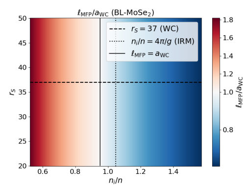
<figcaption class="paper-figure-caption"><b>Fig 1.</b> FIG. 1: Ratio of the mean free path to the Wigner-crystal lattice constant for bilayer MoSe2 as a function of the disorder ratio ni/n and the interaction parameter rS. The dashed line is rS = 37, the dotted line is the Ioffe-Regel-Mott condition ni/n = 4π/g, and the solid line is ℓMFP = aWC.</figcaption>
</figure>
<figure class="paper-figure-card">
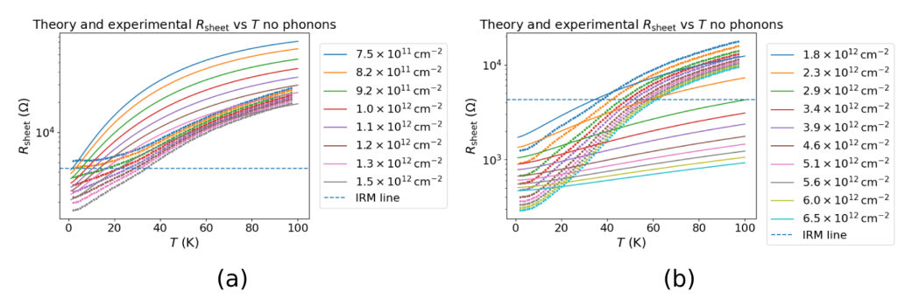
<figcaption class="paper-figure-caption"><b>Fig 2.</b> FIG. 2: Resistivity versus temperature with charged-impurity and defect scattering only (no phonons), for (a) the lower and (b) the higher carrier densities of the experiment. Solid curves: Boltzmann theory. Dotted curves: experimental data [1]. The dashed horizontal line is the IRM resistivity of (11).</figcaption>
</figure>
<figure class="paper-figure-card">
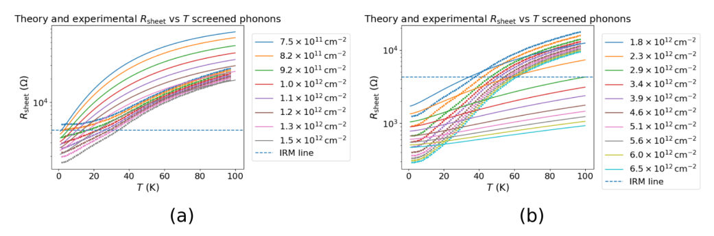
<figcaption class="paper-figure-caption"><b>Fig 3.</b> FIG. 3: Same as Figure 2 with screened LA phonon scattering added, for (a) the lower and (b) the higher carrier densities.</figcaption>
</figure>
<figure class="paper-figure-card">
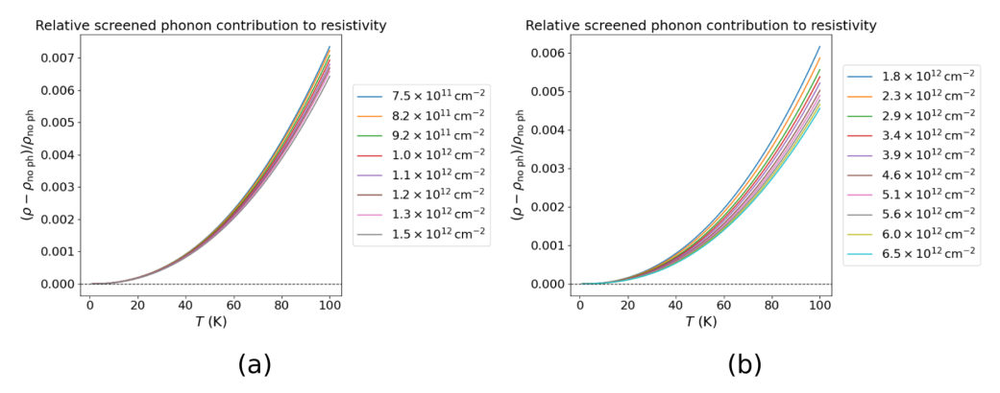
<figcaption class="paper-figure-caption"><b>Fig 4.</b> FIG. 4: Relative phonon contribution R(T) of (12) for screened LA phonons, for (a) the lower and (b) the higher carrier densities.</figcaption>
</figure>
<figure class="paper-figure-card">
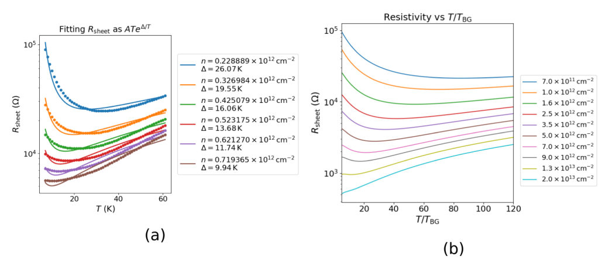
<figcaption class="paper-figure-caption"><b>Fig 5.</b> FIG. 5: Resistivity minima on the two sides of the crossover. (a) Insulating side: experimental data of Ref. [1] (dots) at densities below nMIT, with the phenomenological form ρ(T) = AT e∆/T (solid curves). The minimum arises from the competition between activated carriers at low T and resistive scattering at higher T, and the fitted ∆decreases toward the crossover. (b) Metallic side: calculated Boltzmann resistivity, charged impurities and screened phonons only, plotted against T/TBG for a hypothetical system with TF ≪TBG (bilayer MoSe2 parameters with the sound velocity increased 12 times). The minimum arises from the crossover between the decreasing disorder-limited resistivity for T &gt;...</figcaption>
</figure>
</div>
<p><strong>Summary.</strong> This work theoretically models the electrical resistivity of bilayer MoSe2 by considering scattering from charged impurities, defects, and phonons. It finds that in the metallic regime, the temperature dependence is dominated by disorder screening rather than phonons. The study also notes that a resistivity minimum can arise from different physical mechanisms on either side of the metal-insulator crossover.</p>
<p><strong>Why it may be interesting.</strong> While focused on solid-state transport, the analysis of scattering rates and the interplay between disorder and temperature dependence touches upon concepts relevant to localization and transport in disordered quantum systems.</p>
<details>
<summary>Detailed structure</summary>
<p><strong>Main problem.</strong> The paper investigates the temperature- and density-dependent resistivity of bilayer MoSe2 in the presence of various scattering mechanisms, particularly focusing on the Metal-Insulator Transition (MIT).</p>
<p><strong>Main result.</strong> The temperature dependence of resistivity on the metallic side is primarily controlled by the temperature-dependent screening of charged disorder, with screened acoustic phonons providing only a small correction.</p>
<p><strong>Method.</strong> The study employs the Boltzmann transport theory, treating screening via the Random Phase Approximation (RPA) to calculate the total scattering rate from charged impurities, short-range defects, and longitudinal acoustic phonons.</p>
<p><strong>Model / system.</strong> The physical system is bilayer MoSe2, a 2D semiconductor. The model incorporates scattering from charged impurities, short-range defects, and LA phonons, calculating the total resistivity based on the energy-averaged transport time.</p>
<p><strong>Key observables.</strong> Resistivity $\rho(T)$ as a function of Temperature $T$ and carrier density $n$; the existence and mechanism of a resistivity minimum.</p>
<p><strong>Important parameters / regimes.</strong> Disorder parameters ($n_c, n_d$), phonon coupling constants ($D$), and characteristic temperature scales like the Fermi temperature ($T_F$).</p>
<p><strong>Assumptions / limitations.</strong> The theory is a weak-disorder treatment valid in the metallic regime, neglecting localization corrections and assuming a parabolic band structure.</p>
<p><strong>Figures summary.</strong> Figure 1 shows the ratio of mean free path to lattice constant versus disorder ratio and interaction parameter, illustrating theoretical limits.</p>
<p><strong>Paper structure.</strong> The paper develops the theoretical framework using Boltzmann transport theory, calculates the total scattering rate, analyzes the temperature dependence of resistivity in different regimes (degenerate vs. non-degenerate), and discusses the implications of observing a resistivity minimum.</p>
</details>
<details>
<summary>Abstract</summary>
<p>We calculate the temperature- and density-dependent resistivity of bilayer MoSe$_2$ in the presence of charged impurities, short-range defects, and longitudinal acoustic phonons, using the Boltzmann transport theory with screening treated in the random phase approximation, and compare the results with recent transport measurements. The disorder parameters are taken from the experiment itself and the phonon parameters are taken from literature estimates for MoSe$_2$. We find that screened acoustic phonons are a small correction to the disorder-limited resistivity over the entire experimental temperature range, so that the temperature dependence of the measured resistivity on the metallic side is controlled by the temperature-dependent screening of charged disorder and by neutral defects. We also show that a resistivity minimum as a function of temperature can arise on both sides of the metal-insulator crossover through two different mechanisms: on the insulating side from the interplay between activated carriers and resistive scattering, and on the metallic side from the interplay between disorder and phonon scattering. The existence of a resistivity minimum by itself therefore does not identify the phase.</p>
</details>
<p><sub><a href="#top">↑ back to top</a></sub></p>

<p><a id="paper-2610.28737"></a></p>
<h3 id="local-clifford-equivalence-to-css-codes-polynomial-time-classification-and-conversion"><a href="http://arxiv.org/abs/2610.28737v1">Local Clifford equivalence to CSS codes: Polynomial-time classification and conversion</a></h3>
<p><strong>Authors:</strong> Mingyuan Wang, Stefan Krastanov<br>
<strong>Type:</strong> theory · <strong>Category:</strong> quantum information and computing · <strong>PDF:</strong> <a href="https://arxiv.org/pdf/2610.28737v1">https://arxiv.org/pdf/2610.28737v1</a><br>
<strong>Analysis basis:</strong> full PDF text, analyzed in chunks</p>
<div class="figure-strip-hint">↔ Scroll figures horizontally</div>
<div class="paper-figures-scroll">
<figure class="paper-figure-card">
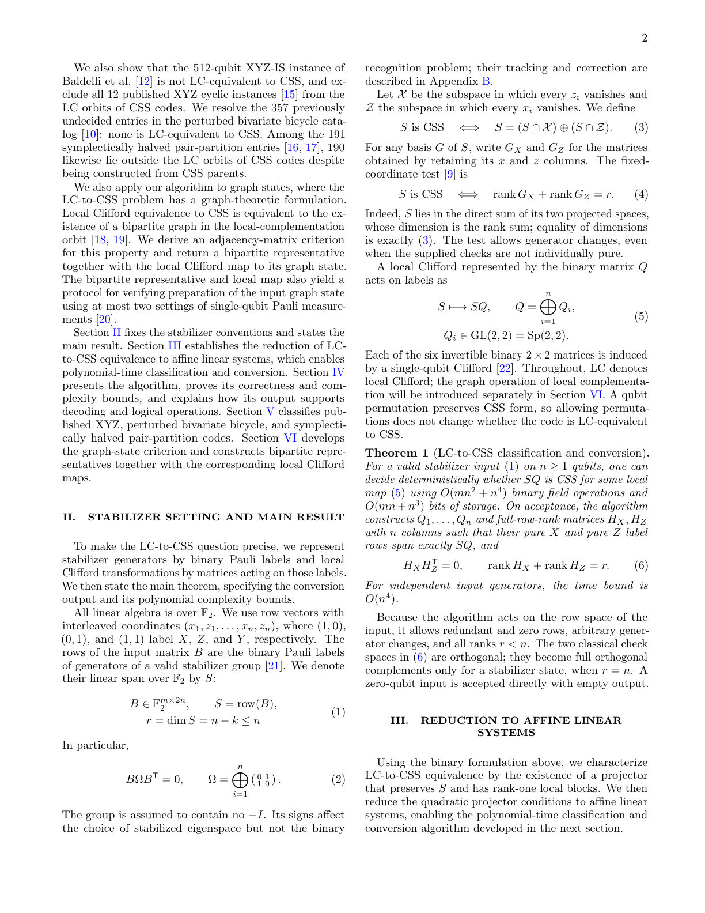
<figcaption class="paper-figure-caption"><b>Fig 1.</b> Low-resolution page preview, page 2</figcaption>
</figure>
<figure class="paper-figure-card">
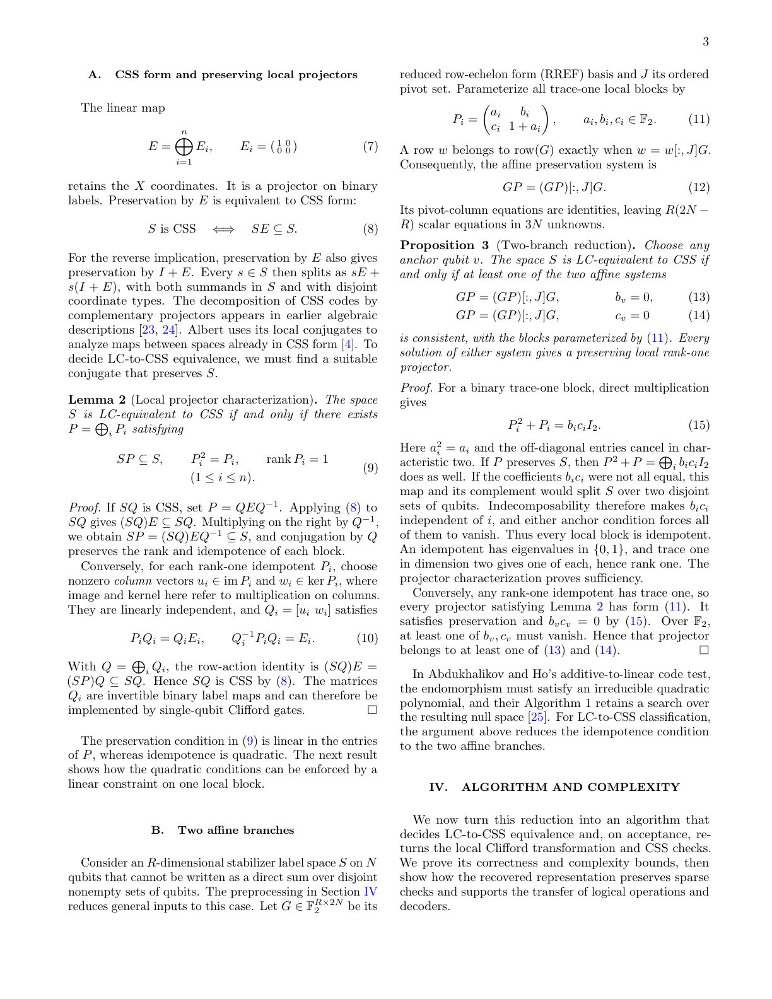
<figcaption class="paper-figure-caption"><b>Fig 2.</b> Low-resolution page preview, page 3</figcaption>
</figure>
<figure class="paper-figure-card">
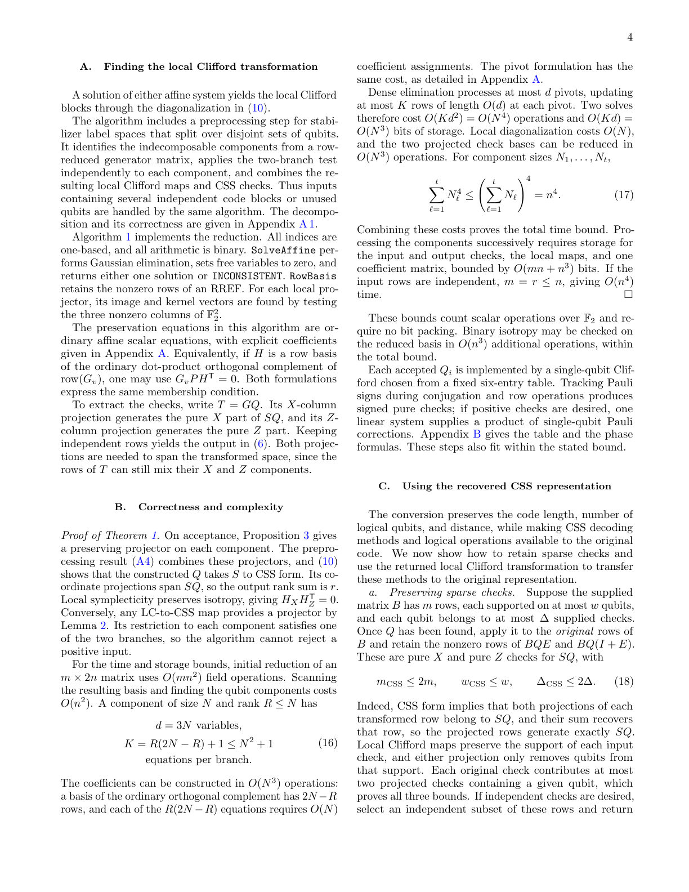
<figcaption class="paper-figure-caption"><b>Fig 3.</b> Low-resolution page preview, page 4</figcaption>
</figure>
<figure class="paper-figure-card">
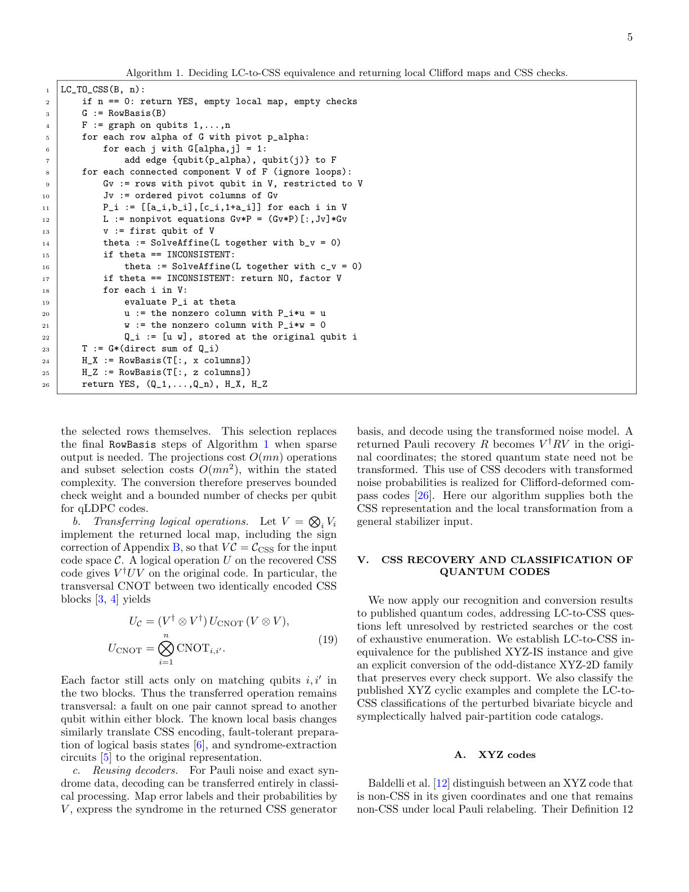
<figcaption class="paper-figure-caption"><b>Fig 4.</b> Low-resolution page preview, page 5</figcaption>
</figure>
<figure class="paper-figure-card">
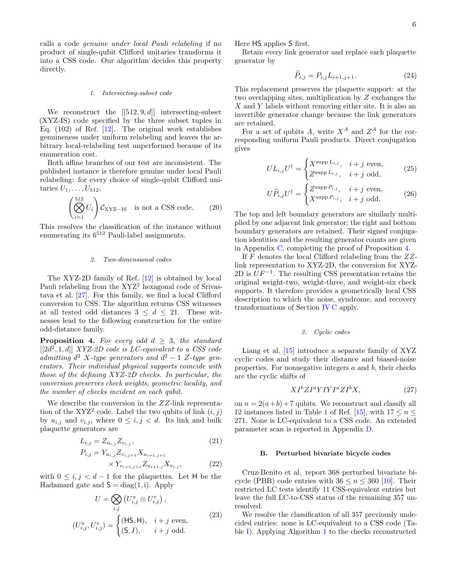
<figcaption class="paper-figure-caption"><b>Fig 5.</b> Low-resolution page preview, page 6</figcaption>
</figure>
</div>
<p><strong>Summary.</strong> This paper introduces a deterministic, polynomial-time algorithm to classify whether any given stabilizer code can be transformed into a structured CSS code via local Clifford operations. By reducing the problem to solving affine linear systems, the authors provide a complete framework for constructing the necessary transformations and the pure X and Z stabilizer checks. This advances the theoretical understanding of code structure and fault-tolerance in quantum computing.</p>
<p><strong>Why it may be interesting.</strong> This work provides a powerful, general algorithmic tool for classifying and simplifying quantum error-correcting codes, which is foundational knowledge for anyone working on fault-tolerant quantum computation.</p>
<details>
<summary>Detailed structure</summary>
<p><strong>Main problem.</strong> The paper addresses the algorithmic problem of determining if an arbitrary stabilizer code is locally Clifford-equivalent (LC-equivalent) to a structured Calderbank–Shor–Steane (CSS) code.</p>
<p><strong>Main result.</strong> A deterministic polynomial-time algorithm is provided to decide this equivalence and, if true, construct the necessary single-qubit Clifford transformations and the pure X and Z stabilizer checks.</p>
<p><strong>Method.</strong> The problem is reduced to checking the consistency of affine linear systems derived from local projector conditions, utilizing binary linear algebra over F_2.</p>
<p><strong>Model / system.</strong> The study focuses on stabilizer codes, which are fundamental structures used in quantum error correction (QEC). CSS codes are a specific, structured subset of these codes that facilitate fault-tolerant operations.</p>
<p><strong>Key observables.</strong> The binary Pauli labels of the stabilizer generators, the existence of local projectors, and the resulting pure X and pure Z check matrices ($H_X, H_Z$).</p>
<p><strong>Important parameters / regimes.</strong> The complexity is bounded by $O(mn^2 + n^4)$ binary field operations for $m$ generators on $n$ qubits.</p>
<p><strong>Assumptions / limitations.</strong> The core assumption is that the problem can be decomposed into checking consistency across independent components of the stabilizer structure.</p>
<p><strong>Figures summary.</strong> The notes reference Lemma 2 characterizing the projector, Proposition 3 detailing the two-branch reduction, and Algorithm 1 providing the full pseudo-code for the decision and conversion process.</p>
<p><strong>Paper structure.</strong> The paper systematically develops the mathematical characterization of LC-to-CSS equivalence, reduces it to solving affine linear systems, and presents a comprehensive algorithm for both decision and construction, including specific results for graph states.</p>
</details>
<details>
<summary>Abstract</summary>
<p>Calderbank--Shor--Steane (CSS) codes support decoding and fault-tolerant logical operations through separate pure $X$ and pure $Z$ stabilizer checks. Generator choices and single-qubit Clifford transformations can obscure this structure. We give a deterministic polynomial-time algorithm that decides whether an arbitrary stabilizer code is locally Clifford-equivalent to a CSS code and constructs the required transformation and CSS checks whenever such a form exists. For $m$ possibly redundant generator rows on $n$ qubits, the algorithm uses $O(mn^2+n^4)$ binary field operations. We reduce the problem to affine linear systems by characterizing local projectors that preserve the span of the binary stabilizer labels. The conversion preserves code parameters and check sparsity for quantum low-density parity-check (qLDPC) codes. We demonstrate CSS recovery and decoder reuse and resolve previously open LC-to-CSS classification questions for published code constructions. For graph states, LC-to-CSS equivalence corresponds to the existence of a bipartite graph in the local-complementation orbit. We derive a necessary-and-sufficient adjacency-matrix criterion for this property and construct such a graph whenever one exists. Our algorithm makes CSS decoding and fault-tolerant constructions accessible throughout the local Clifford equivalence classes of CSS codes.</p>
</details>
<p><sub><a href="#top">↑ back to top</a></sub></p>

<p><a id="paper-2610.29779"></a></p>
<h3 id="mamba-quantum-eigensolver-mqe-a-selective-state-space-model-for-scalable-ground-state-simulations-in-quantum-chemistry"><a href="http://arxiv.org/abs/2610.29779v1">Mamba Quantum Eigensolver (MQE): A Selective State Space Model for Scalable Ground State Simulations in Quantum Chemistry</a></h3>
<p><strong>Authors:</strong> G. X. A. Petronilo, M. R. Araújo, Erico S. Teixeira, Clebson Cruz<br>
<strong>Type:</strong> theory · <strong>Category:</strong> quantum information and computing · <strong>PDF:</strong> <a href="https://arxiv.org/pdf/2610.29779v1">https://arxiv.org/pdf/2610.29779v1</a><br>
<strong>Analysis basis:</strong> full PDF text, analyzed in chunks</p>
<div class="figure-strip-hint">↔ Scroll figures horizontally</div>
<div class="paper-figures-scroll">
<figure class="paper-figure-card">
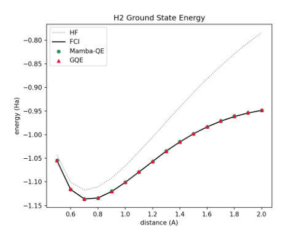
<figcaption class="paper-figure-caption"><b>Fig 1.</b> FIG. 1. Potential energy surface of the H2 molecule obtained with Mamba-QE and compared against the Full Configura- tion Interaction (FCI) and Hartree-Fock (HF) energy refer- ence. The proposed architecture accurately reproduces the bond dissociation curve across all evaluated internuclear dis- tances, achieving chemical accuracy throughout the sampled geometry range.</figcaption>
</figure>
<figure class="paper-figure-card">
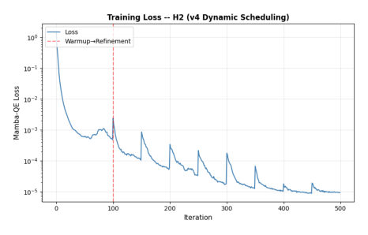
<figcaption class="paper-figure-caption"><b>Fig 2.</b> FIG. 2. Training loss of the proposed Mamba-QE for the H2 molecule under the dynamic scheduling strategy. The dashed vertical line indicates the transition from the super- vised warm-up stage to the iterative refinement phase. After a rapid initial decrease, the loss exhibits periodic oscillations associated with successive policy update cycles while main- taining an overall downward trend, converging to values on the order of 10−5.</figcaption>
</figure>
<figure class="paper-figure-card">
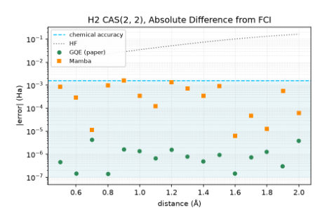
<figcaption class="paper-figure-caption"><b>Fig 3.</b> FIG. 3. The absolute error from FCI. The chemical accuracy threshold (the blue dashed line) from H2 in compare with GPT-QE (the green dot), Hartree-Fock method (black dashed line) and Mamba-QE (orange box).</figcaption>
</figure>
</div>
<p><strong>Summary.</strong> This paper introduces the Mamba Quantum Eigensolver (Mamba-QE), an advancement over existing generative quantum eigensolvers. By replacing the computationally expensive Transformer backbone with a linear-complexity Selective State Space Model (SSM), Mamba-QE achieves robust and scalable ground-state energy calculations. It successfully reproduces chemical accuracy for molecular systems while generalizing across entire potential energy surfaces.</p>
<p><strong>Why it may be interesting.</strong> This work directly addresses the scalability bottleneck in quantum chemistry simulations by replacing a high-complexity attention mechanism with an efficient SSM, making quantum simulation of larger, more complex molecules feasible.</p>
<details>
<summary>Detailed structure</summary>
<p><strong>Main problem.</strong> Predicting molecular electronic structure by solving the electronic Schrödinger equation is computationally challenging, especially for large molecules.</p>
<p><strong>Main result.</strong> Mamba-QE achieves FCI-level accuracy for the H2 molecule across 16 geometries while maintaining linear computational complexity, significantly improving scalability over previous methods.</p>
<p><strong>Method.</strong> The authors replace the quadratic-complexity Transformer backbone of the Generative Quantum Eigensolver (GQE) with a Selective State Space Model (SSM) to process operator sequences linearly.</p>
<p><strong>Model / system.</strong> The method is applied to quantum chemistry simulations, aiming to find the ground state energy by generating quantum circuits that approximate the electronic Hamiltonian expectation value.</p>
<p><strong>Key observables.</strong> Energy error below $3 	imes 10^{-6}$ Ha; zero variational violations; successful reproduction of Full Configuration Interaction (FCI) reference energies.</p>
<p><strong>Important parameters / regimes.</strong> Linear $O(L)$ complexity vs. quadratic $O(L^2)$ complexity; distance-conditioning $\phi(R)$ for Potential Energy Surface (PES) mapping.</p>
<p><strong>Assumptions / limitations.</strong> The $    ext{H}_2$ benchmark is too small to fully expose the runtime advantages of the linear complexity backbone.</p>
<p><strong>Figures summary.</strong> Figure 1 compares the predicted PES of H2 across methods; Figure 3 compares the absolute error from FCI across methods, showing Mamba-QE's superior performance.</p>
<p><strong>Paper structure.</strong> The paper identifies the limitations of VQE and GQE (Transformer bottleneck), proposes Mamba-QE using SSMs for linear complexity, and enhances it with distance-conditioning for PES mapping, detailing the training procedure and results.</p>
</details>
<details>
<summary>Abstract</summary>
<p>Predicting molecular electronic structure using Quantum Computing approaches is a challenge in Computational Chemistry. Traditional Variational Quantum Eigensolvers (VQEs) are typically hindered by optimization challenges. The alternative Generative Quantum Eigensolver (GQE) mitigates this by reformulating ground-state search as discrete sequence generation, but its Transformer backbone suffers from quadratic computational complexity, bottlenecking scalability for larger molecules. To address this, we introduce the Mamba Quantum Eigensolver (Mamba-QE), which replaces the Transformer with a Selective State Space Model (SSM) to process operator sequences with linear $\mathcal{O}(L)$ complexity. Additionally, we integrate a distance-conditioned mechanism enabling the direct prediction of complete potential energy surfaces (PES). Evaluated on the $H_2$ molecule, Mamba-QE reproduces Full Configuration Interaction (FCI) reference energies well within chemical accuracy, achieving an energy error below $3\times10^{-6}$ Ha across 16 geometries with zero variational violations. Mamba-QE maintains high expressive power while establishing a robust, scalable foundation for quantum simulations of complex molecular systems.</p>
</details>
<p><sub><a href="#top">↑ back to top</a></sub></p>

<p><a id="paper-2610.29531"></a></p>
<h3 id="phase-transitions-in-learning-driven-by-extremal-data"><a href="http://arxiv.org/abs/2610.29531v1">Phase Transitions in Learning Driven by Extremal Data</a></h3>
<p><strong>Authors:</strong> Ethan Levien, Trevor GrandPre<br>
<strong>Type:</strong> theory · <strong>Category:</strong> disordered systems and neural networks · <strong>PDF:</strong> <a href="https://arxiv.org/pdf/2610.29531v1">https://arxiv.org/pdf/2610.29531v1</a><br>
<strong>Analysis basis:</strong> full PDF text, analyzed in chunks</p>
<div class="figure-strip-hint">↔ Scroll figures horizontally</div>
<div class="paper-figures-scroll">
<figure class="paper-figure-card">
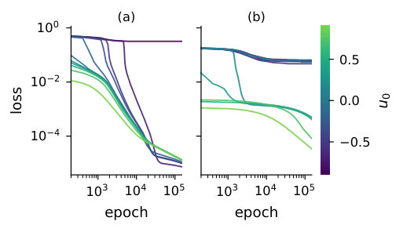
<figcaption class="paper-figure-caption"><b>Fig 1.</b> FIG. 2. Training loss against epoch, for gradient descent from a grid of initial overlaps u0 (colorbar) at two bag sizes. (a) d = 22, n = 3 and (b) d = 150, n = 1808. Parameters are (λ0, ρ0) = (0.2, 1.7), α = 0.05, ρtrue = 1.2, q = 0.2, ℓ= 100, with learning rate 0.1.</figcaption>
</figure>
<figure class="paper-figure-card">
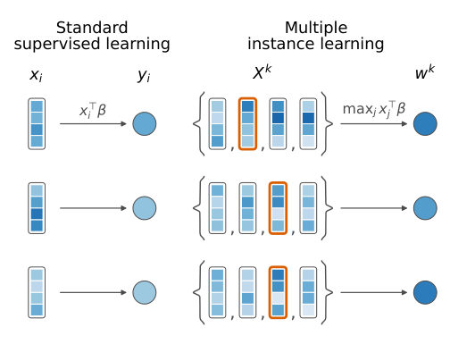
<figcaption class="paper-figure-caption"><b>Fig 2.</b> FIG. 1. Standard supervised learning maps each feature vec- tor xi to a label yi = x⊤ i β. In MIL, bags Xk of instances are mapped to a single label wk produced by an unobserved selection rule (e.g. the max). The goal is to learn β from (wk, Xk) pairs alone without ever observing which instance determined the label.</figcaption>
</figure>
<figure class="paper-figure-card">
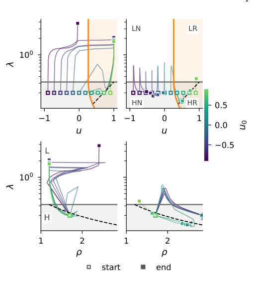
<figcaption class="paper-figure-caption"><b>Fig 3.</b> FIG. 3. Gradient-descent trajectories with different u0 (col- orbar). The top row shows the dynamics in (u, λ) space with the H/L and R/N phase boundaries shown. The bottom pan- els show trajectories in (ρ, λ) space, with the H/L boundary shows. the dashed lines denote the invariant manifold de- fined by Eqs. 15 and 19. Parameters are (λ0, ρ0) = (0.2, 1.7), α = 0.05, ρtrue = 1.2, q = 0.2, ℓ= 100, run to flow time t = 15000 (learning rate 0.1).</figcaption>
</figure>
<figure class="paper-figure-card">
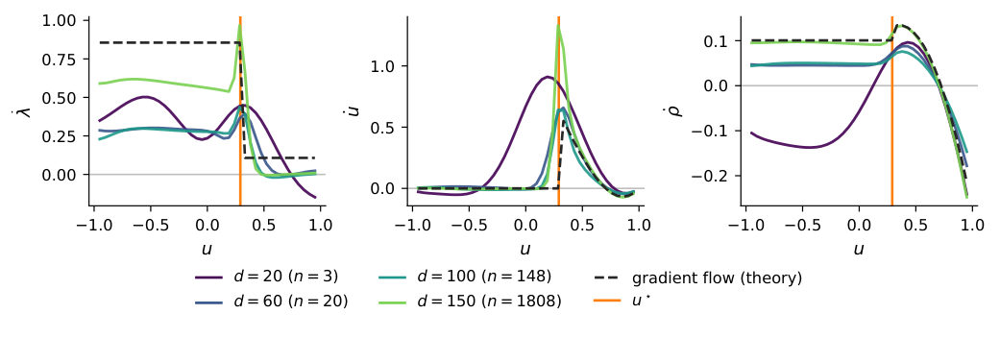
<figcaption class="paper-figure-caption"><b>Fig 4.</b> FIG. 4. Convergence of the finite-size training gradient to the asymptotic gradient-flow field. Empirical (˙λ, ˙u, ˙ρ) compared to the d →∞theory (dashed line). Parameters are (λ0, ρ0) = (0.2, 1.7), α = 0.05, ρtrue = 1.2, q = 0.2, ℓ= 100. The vertical line marks u⋆.</figcaption>
</figure>
</div>
<p><strong>Summary.</strong> This work analyzes the learning dynamics in a multiple instance learning setting where the underlying process is extremal. By studying the gradient flow in the large-dimensional limit, the authors predict two distinct phase transitions: one related to random energy models and another related to memory retrieval. This connects modern deep learning optimization challenges to fundamental physics concepts of disordered systems.</p>
<p><strong>Why it may be interesting.</strong> The connection between optimization failure (gradient breakdown) in complex machine learning models and established concepts from disordered systems (like REM) provides a powerful theoretical lens for understanding learning dynamics.</p>
<details>
<summary>Detailed structure</summary>
<p><strong>Main problem.</strong> The paper investigates the conditions under which gradient descent successfully recovers the true underlying parameters in an extremal regression problem modeled as Multiple Instance Learning (MIL). A key challenge is handling the max-pooling nonlinearity, which leads to vanishing gradients.</p>
<p><strong>Main result.</strong> The gradient dynamics exhibit two distinct phase transitions: an intrinsic freezing transition related to the Random Energy Model (REM) and a retrieval transition characteristic of Hopfield networks. The asymptotic behavior is governed by a critical sharpness parameter $\lambda^\star$.</p>
<p><strong>Method.</strong> The analysis involves deriving the gradient flow equations in the joint limit of large bags ($n 	o \infty$) and high dimension ($d 	o \infty$) while analyzing the scaled free energy $\phi_\alpha(\lambda)$.</p>
<p><strong>Model / system.</strong> The model is an extremal regression problem where bag labels are determined by $\max_j (x_j^	op eta_{	ext{true}})$, which is approximated by a softmax function controlled by a learnable sharpness parameter $\lambda$. The dynamics are analyzed using gradient flow ODEs.</p>
<p><strong>Key observables.</strong> The normalized overlap $u = \langle b, eta_{	ext{true}} 
angle/d$, the sharpness parameter $\lambda$, and the asymptotic normalized bag output $\hat{w}_\lambda/d$.</p>
<p><strong>Important parameters / regimes.</strong> The scaling parameter $\alpha = \ln n/d$, the critical temperature $\lambda^\star = \sqrt{2\alpha}$, and the initial overlap $u_0$.</p>
<p><strong>Assumptions / limitations.</strong> The analysis relies on taking the almost sure limits of the loss functions and assuming the background population is i.i.d. Gaussian.</p>
<p><strong>Figures summary.</strong> Figures compare finite-size empirical gradient trajectories to asymptotic predictions, illustrating the phase transitions in the $(\lambda-u)$ and $(
ho-\lambda)$ planes. Table I summarizes the asymptotic normalized bag output across four distinct operational phases.</p>
<p><strong>Paper structure.</strong> The paper establishes the MIL framework, derives the asymptotic free energy $\phi_\alpha(\lambda)$ showing the freezing transition, and then develops coupled ODEs for the gradient flow ($\dot{\lambda}, \dot{u}, \dot{
ho}$) to map out the phase diagram across four regimes (H/L $    imes$ R/N).</p>
</details>
<details>
<summary>Abstract</summary>
<p>We study an extremal regression problem, an example of multiple instance learning (MIL), where the predictors are given as multisets, called bags. The bag elements (called instances) possess hidden labels which are pooled to produce an observed bag-level label. Max pooling is common in MIL applications, but gives rise to vanishing gradients. To handle this, modern MIL pipelines approximate the max with a softmax, treating the sharpness as a learnable parameter, denoted $λ$. When the max pooling model is the true data generating process, learning will be successful when $λ$ is increased during gradient descent, thereby driving the dynamics into regions of parameter space with vanishing gradients. To understand the conditions under which gradient descent breaks down, we study a minimal model and derive a low dimensional projection of the gradient flow in the joint limit of large bags $n$ and high dimension $d$ with $α=\ln n/d$ fixed. The flow has two distinct phase transitions: an intrinsic freezing transition related to the random energy model of disordered systems, and a retrieval transition occurring in modern Hopfield networks. Numerical simulation confirms both the phase diagram and the convergence of the finite-size training gradient to its predicted asymptotic form.</p>
</details>
<p><sub><a href="#top">↑ back to top</a></sub></p>

<p><a id="paper-2610.29230"></a></p>
<h3 id="pq-vault-provably-quantum-safe-asset-custody-for-unmodified-ethereum"><a href="http://arxiv.org/abs/2610.29230v1">PQ-Vault: Provably Quantum-Safe Asset Custody for Unmodified Ethereum</a></h3>
<p><strong>Authors:</strong> Hassan Khodaiemehr, Khadijeh Bagheri, Chen Feng<br>
<strong>Type:</strong> theory · <strong>Category:</strong> other · <strong>PDF:</strong> <a href="https://arxiv.org/pdf/2610.29230v1">https://arxiv.org/pdf/2610.29230v1</a><br>
<strong>Analysis basis:</strong> full PDF text, analyzed in chunks</p>
<div class="figure-strip-hint">↔ Scroll figures horizontally</div>
<div class="paper-figures-scroll">
<figure class="paper-figure-card">
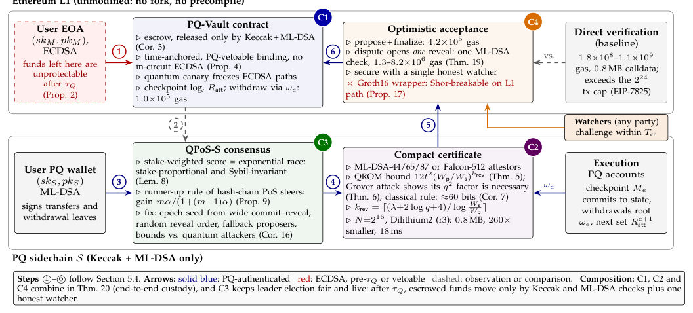
<figcaption class="paper-figure-caption"><b>Fig 1.</b> Fig. 1. PQ-Vault architecture (QPoS-S: quantum-safe proof of stake). Badges C1–C4: contributions of Table 1; gas measured with Foundry (Section 9); grey: baseline avoided by C4.</figcaption>
</figure>
<figure class="paper-figure-card">

<figcaption class="paper-figure-caption"><b>Fig 2.</b> Fig. 2. Certificate size vs. number of validators (round-3 Dilithium2, Wp = ⌊0.3333 W⌋, 85% signed). Colors: stake distribution; solid: QROM rule; dotted: classical rule; black: all signatures.</figcaption>
</figure>
<figure class="paper-figure-card">
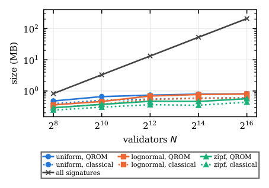
<figcaption class="paper-figure-caption"><b>Fig 3.</b> Figure 2 and Table 5 report certificates with real round- 3 Dilithium2 signatures. (1) Compactness. At fixed λ, q and Ws/Wp, krev does not depend on N, and the size O(krev(|pk| + |σ|) + hkrev log N) grows logarithmically in N while Ws/Wp stays bounded away from 1: from 0.36 MB at N = 28 to 0.80 MB at N = 216 (log-normal, QROM). Shipping all signatures costs 208 MB at N = 216, 260× more, a ratio growing as Θ(N/ log N). (2) Cost of quantum security. The QROM rule raises krev by 35% (143 to 193), but coins collide on heavy attestors, so distinct reveals grow less: the size overhead is 19–34% across all configurations (23–34% for log-normal stake), and verification time grows by 20– 58% for...</figcaption>
</figure>
<figure class="paper-figure-card">
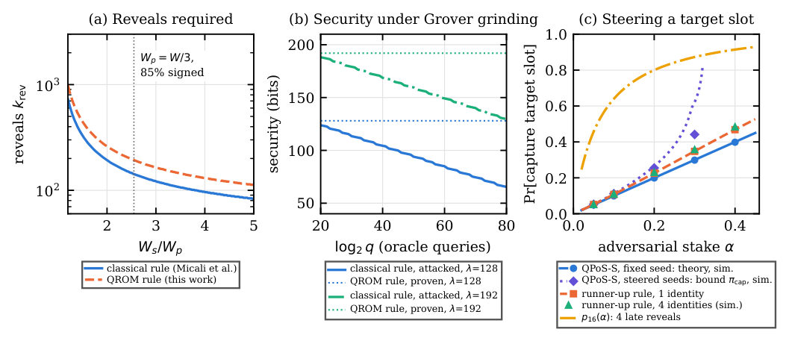
<figcaption class="paper-figure-caption"><b>Fig 4.</b> Fig. 3. (a) Reveals required by the classical and QROM rules. (b) Security of classically parameterized certificates under the attack of Theorem 6 (Ws/Wp = 2.55, N = 216); dotted: level λ guaranteed by Theorem 5 under the QROM rule. (c) Target-slot capture under QPoS-S, with a fixed seed and with seeds steered across epochs (dotted: bound πcap of Theorem 13 for B = 0; diamonds: the simulated adversary of Section 9.6, which maximizes c rather than capture), and under the runner-up rule (lines: theory; other markers: 4 × 105 simulated trials each).</figcaption>
</figure>
</div>
<p><strong>Summary.</strong> This paper designs PQ-Vault, a comprehensive custody system to safeguard Ethereum assets against future quantum computer attacks. It achieves this by implementing a quantum-safe sidechain that requires funds to move into a contract relying only on post-quantum cryptography. The system provides rigorous security proofs for certificate soundness and leader election fairness.</p>
<p><strong>Why it may be interesting.</strong> While not directly about physical quantum systems, the rigorous application of quantum security models (QROM) and the need to secure digital infrastructure against quantum attacks is highly relevant to the theoretical foundations of quantum information science.</p>
<details>
<summary>Detailed structure</summary>
<p><strong>Main problem.</strong> The core problem is protecting digital assets on the Ethereum blockchain from theft by quantum computers that can break current public-key cryptography (like ECDSA).</p>
<p><strong>Main result.</strong> The authors propose PQ-Vault, a custody system that moves funds to a quantum-safe sidechain, providing provable security against quantum adversaries for asset release.</p>
<p><strong>Method.</strong> The system combines a quantum-safe proof-of-stake sidechain, compact certificate generation, and an optimistic dispute protocol, relying on post-quantum cryptography primitives.</p>
<p><strong>Model / system.</strong> The model is the unmodified Ethereum blockchain interacting with a specialized, quantum-safe sidechain (PQ-Vault). The security proof is analyzed within the Quantum Random Oracle Model (QROM).</p>
<p><strong>Key observables.</strong> Certificate size (0.8 MB for 65,536 validators), verification time (20 ms), and the security guarantee level (restored to 128 bits).</p>
<p><strong>Important parameters / regimes.</strong> The quantum threshold ($    au_Q$) determines when the system must switch from classical to quantum-safe primitives; validator count (65,536).</p>
<p><strong>Assumptions / limitations.</strong> Assumptions include the integrity of the L1 consensus (A1) and the security of the chosen post-quantum primitives (ML-DSA).</p>
<p><strong>Figures summary.</strong> The notes reference a conceptual flow (Figure 1) showing the L1 to PQ sidechain withdrawal path, and tables summarizing contributions and security property comparisons.</p>
<p><strong>Paper structure.</strong> The paper builds by first establishing the necessity of quantum-safe custody (C1), then detailing the certificate soundness (C2), the leader election fairness (C3), and finally, the L1 acceptance mechanism using fraud proofs (C4).</p>
</details>
<details>
<summary>Abstract</summary>
<p>A quantum computer could recover the key of any Ethereum account whose public key appears on chain. We prove that no sidechain or bridge that leaves Ethereum's rules unchanged can protect such accounts: their funds must move into a contract whose release condition relies only on quantum-safe primitives. We design \emph{PQ-Vault}, a custody system for unmodified Ethereum combining this vault, a quantum-safe proof-of-stake sidechain whose checkpoints carry compact certificates, and an optimistic dispute protocol. We give the first security proof of compact certificates against quantum attackers and a matching attack: with classically chosen parameters, the guarantee falls from 128 to about 60 bits, and a simple rule restores it. We show that a common seed-update rule in hash-chain proof of stake lets an attacker steer chosen slots and profit from splitting its stake, and give an election whose steering gain and inclusion delay are provably bounded against quantum attackers. Since compressing certificates with a pairing-based SNARK breaks quantum security, we use fraud proofs that need a single signature check. For 65,536 validators, a certificate is 0.8 MB, 260 times smaller than all signatures, and verifies in about 20 ms; the vault accepts a checkpoint for about 420,000 gas.</p>
</details>
<p><sub><a href="#top">↑ back to top</a></sub></p>

<p><a id="paper-2610.29058"></a></p>
<h3 id="qubo-based-conformer-selection-with-quantum-classical-hybrid-optimization-for-multiconformer-ligand-modeling"><a href="http://arxiv.org/abs/2610.29058v1">QUBO-Based Conformer Selection with Quantum-Classical Hybrid Optimization for Multiconformer Ligand Modeling</a></h3>
<p><strong>Authors:</strong> Jiyun Lee, Haeseong Kim, Junho Lee, Joonsuk Huh<br>
<strong>Type:</strong> both · <strong>Category:</strong> other · <strong>PDF:</strong> <a href="https://arxiv.org/pdf/2610.29058v1">https://arxiv.org/pdf/2610.29058v1</a><br>
<strong>Analysis basis:</strong> full PDF text, analyzed in chunks</p>
<div class="figure-strip-hint">↔ Scroll figures horizontally</div>
<div class="paper-figures-scroll">
<figure class="paper-figure-card">
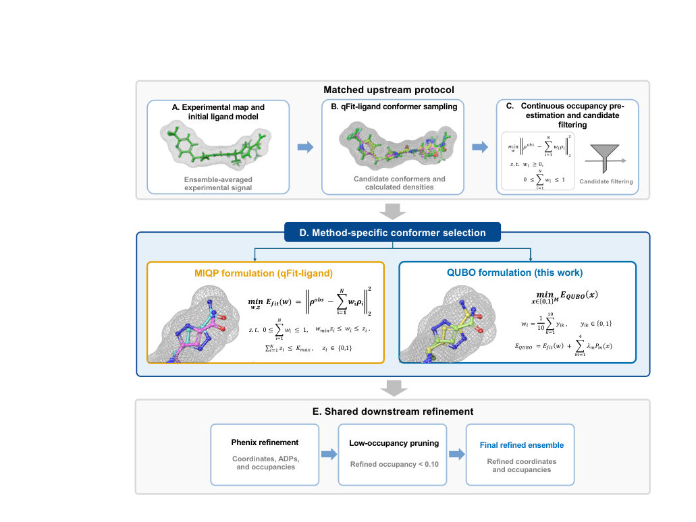
<figcaption class="paper-figure-caption"><b>Fig 1.</b> FIG. 1. Overview of the two ligand-modeling workflows. Panels A–C show the matched upstream procedure. Both workflows start from the same experimental input and use the same qFit-ligand settings, but candidate generation and occupancy pre- estimation are run independently. Panel D shows the method-specific conformer-selection step. qFit-ligand uses continuous occupancies and hard MIQP constraints. Quantum-qFit uses discrete occupancy bits and finite QUBO penalties and is solved with a quantum–classical hybrid solver. Panel E shows the common downstream procedure. The selected ensembles undergo the same Phenix refinement of coordinates, ADPs, and occupancies, followed by removal of...</figcaption>
</figure>
<figure class="paper-figure-card">
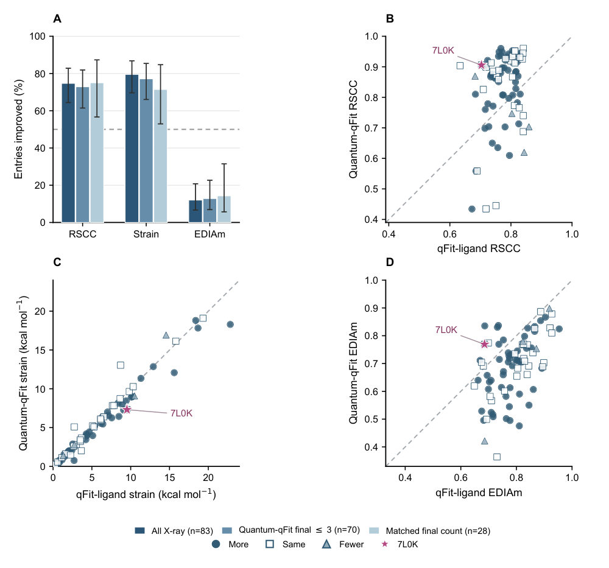
<figcaption class="paper-figure-caption"><b>Fig 2.</b> FIG. 2. Paired comparison of the 83 X-ray ligand models. (A) Percentage of entries that changed in the favorable direction with Quantum-qFit. Favorable means higher RSCC, lower occupancy-weighted torsional strain, or higher EDIAm. The three bar shades represent all 83 entries, the 70 entries in which Quantum-qFit retained at most three final conformers, and the 28 entries with matched final conformer counts. Error bars show 95% Wilson confidence intervals. The dashed line marks 50%. (B–D) Each point represents one paired entry. The horizontal axis shows qFit-ligand and the vertical axis shows Quantum-qFit. The diagonal indicates equal values. Circles mark entries with more final conformers...</figcaption>
</figure>
<figure class="paper-figure-card">
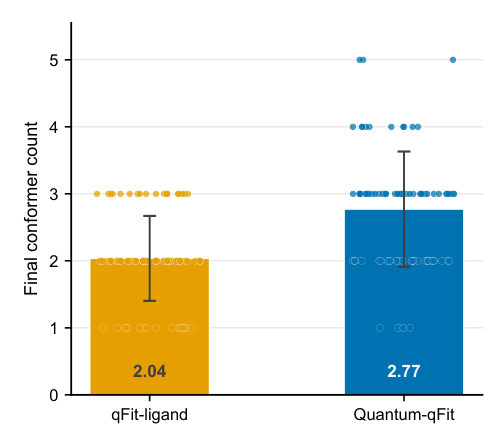
<figcaption class="paper-figure-caption"><b>Fig 3.</b> FIG. 3. Final ligand conformer counts for the 83 paired X- ray entries. Counts were taken after refinement and low- occupancy pruning. Orange and blue bars show the mean counts for qFit-ligand and Quantum-qFit, respectively. Error bars show standard deviations. Each point represents one en- try. Points are jittered horizontally only to make overlapping values visible.</figcaption>
</figure>
<figure class="paper-figure-card">
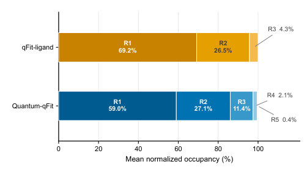
<figcaption class="paper-figure-caption"><b>Fig 4.</b> FIG. 4. Distribution of refined occupancy across conformer ranks in the 83 X-ray entries. Occupancies were normalized to sum to one within each final model and then ordered from highest to lowest. Rank 1 is therefore the major conformer. Missing ranks were assigned zero before averaging across en- tries. Orange shades show qFit-ligand and blue shades show Quantum-qFit.</figcaption>
</figure>
<figure class="paper-figure-card">
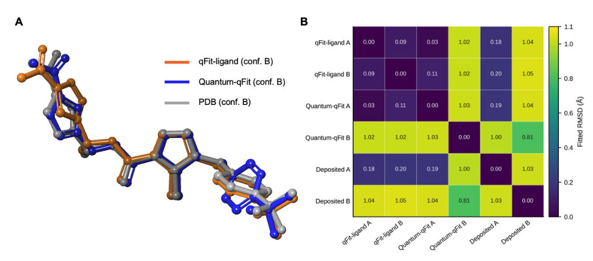
<figcaption class="paper-figure-caption"><b>Fig 5.</b> FIG. 5. Structural comparison of the refined 7L0K ligand models in chain A. (A) Overlay of minor conformer B from qFit- ligand (orange), Quantum-qFit (blue), and the deposited structure (gray) after structural alignment. (B) Pairwise heavy-atom RMSDs after Kabsch alignment for conformers A and B from the three models. Smaller values indicate more similar ligand shapes after alignment. Because this fitting removes overall translation and rotation, these RMSDs do not measure how far the conformers are separated in the binding site. The corresponding A–B RMSDs calculated without alignment are discussed in the Results.</figcaption>
</figure>
</div>
<p><strong>Summary.</strong> This work proposes using a QUBO formulation, solved via a quantum-classical hybrid solver, to select the most representative conformations of a ligand bound to a protein. By comparing this method against a standard MIQP approach using X-ray data, the authors show that the QUBO framework can yield superior structural agreement metrics. This advances the field by providing a quantum-inspired tool for complex conformational sampling in structural biology.</p>
<p><strong>Why it may be interesting.</strong> The application of QUBO optimization to a complex, real-world problem in structural biology demonstrates a tangible use case for quantum-inspired optimization techniques beyond pure quantum simulation.</p>
<details>
<summary>Detailed structure</summary>
<p><strong>Main problem.</strong> The paper addresses the challenge of multiconformer ligand modeling, which requires determining the optimal subset of candidate ligand conformations and assigning their respective occupancies.</p>
<p><strong>Main result.</strong> The proposed QUBO-based quantum-classical hybrid optimization approach achieved higher ligand-region real-space correlation coefficients (RSCC) and lower torsional strain compared to the established MIQP-based workflow.</p>
<p><strong>Method.</strong> The authors reformulated the conformer selection problem into a QUBO model and solved it using a quantum-classical hybrid solver, comparing its results against a standard MIQP workflow.</p>
<p><strong>Model / system.</strong> The system involves ligands adopting multiple conformations within a protein binding site, analyzed using experimental X-ray diffraction data and cryo-EM maps.</p>
<p><strong>Key observables.</strong> Real-space correlation coefficients (RSCC), occupancy-weighted torsional strain, and Molecular Electron Density for Individual Atoms score (EDIAm).</p>
<p><strong>Important parameters / regimes.</strong> The comparison used 83 paired X-ray ligand entries, and the QUBO formulation involved finite penalties and discrete occupancy encoding.</p>
<p><strong>Assumptions / limitations.</strong> The comparison does not fully separate the effects of occupancy discretization, finite-penalty encoding, or the choice of solver, and the QUBO penalty construction is not an exact encoding of the MIQP feasible set.</p>
<p><strong>Figures summary.</strong> Figures compare the structural metrics (RSCC, strain) between the MIQP and QUBO workflows across multiple entries, and one figure shows the wall-clock time comparison for solving the QUBO problem size.</p>
<p><strong>Paper structure.</strong> The paper first establishes the problem (multiconformer selection), details the two competing methods (MIQP vs. QUBO), presents the comparative analysis using multiple experimental datasets, and concludes by discussing the implications of the QUBO formulation.</p>
</details>
<details>
<summary>Abstract</summary>
<p>A ligand can adopt multiple conformations within the same binding site, and these conformations can interact differently with the surrounding protein. Multiconformer modeling must therefore determine which candidate conformations to retain and what occupancies to assign to them. An established automated approach uses mixed-integer quadratic programming (MIQP) with hard occupancy and conformer-count limits for this selection. Here, we reformulated conformer selection as a quadratic unconstrained binary optimization (QUBO) problem with finite penalties and discrete occupancies. We solved the QUBO using a quantum-classical hybrid solver. We compared this workflow with the MIQP-based qFit-ligand workflow across 83 paired X-ray ligand entries using the same experimental inputs and the same qFit-ligand processing protocol. For each entry, both final models were evaluated against the same composite-omit map generated from the common input structure before the two workflows diverged. Quantum-qFit produced higher ligand-region real-space correlation coefficients (RSCC) in 62 entries 74.7% and lower occupancy-weighted torsional strain in 66 entries 79.5%. Similar directional trends remained in the 28 entries with matched final conformer counts. The molecular Electron Density for Individual Atoms score (EDIAm) decreased in most entries. This result shows that higher regional map agreement did not necessarily correspond to stronger atom-level density support. Overall, the results show that the conformer-selection formulation can change which ligand states are represented from the same experimental data and provide a QUBO framework for studying multiconformer ligand selection.</p>
</details>
<p><sub><a href="#top">↑ back to top</a></sub></p>

<p><a id="paper-2610.28857"></a></p>
<h3 id="resonant-inverse-photoelectron-spectroscopy-of-ce-and-u-oxides"><a href="http://arxiv.org/abs/2610.28857v1">Resonant Inverse Photoelectron Spectroscopy of Ce and U Oxides</a></h3>
<p><strong>Authors:</strong> JG Tobin<br>
<strong>Type:</strong> both · <strong>Category:</strong> strongly correlated electrons · <strong>PDF:</strong> <a href="https://arxiv.org/pdf/2610.28857v1">https://arxiv.org/pdf/2610.28857v1</a><br>
<strong>Analysis basis:</strong> full PDF text, analyzed in chunks</p>
<div class="figure-strip-hint">↔ Scroll figures horizontally</div>
<div class="paper-figures-scroll">
<figure class="paper-figure-card">
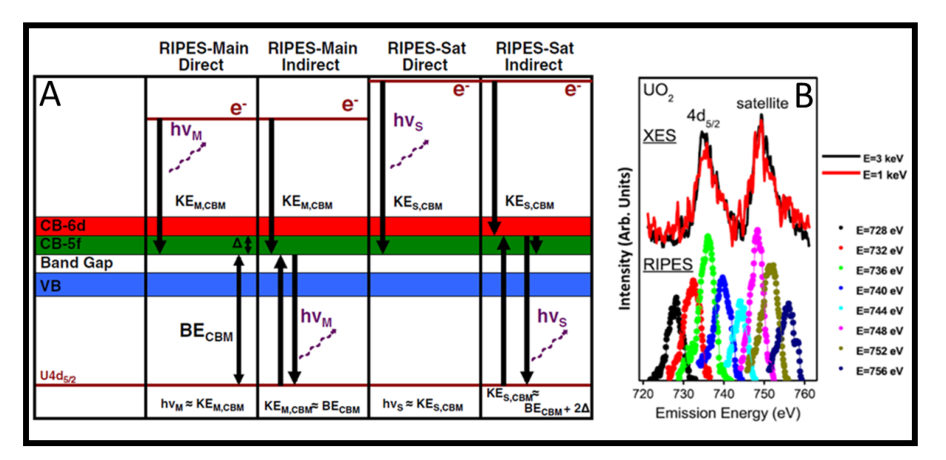
<figcaption class="paper-figure-caption"><b>Fig 1.</b> Figure 2 Shown here is a synopsis of the results of the RIPES experiment upon uranium dioxide. A: An energy level diagram illustrating the direct and indirect processes. B: The U N5 RIPES and XES spectra. Note the two maxima in the RIPES and the corresponding doublet in the XES. See the text for further discussion. VB is valence band. CB is conduction band. CBM is conduction band minimum. KE is kinetic energy.</figcaption>
</figure>
<figure class="paper-figure-card">
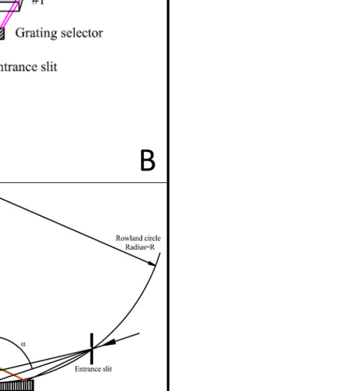
<figcaption class="paper-figure-caption"><b>Fig 2.</b> Figure 4</figcaption>
</figure>
<figure class="paper-figure-card">
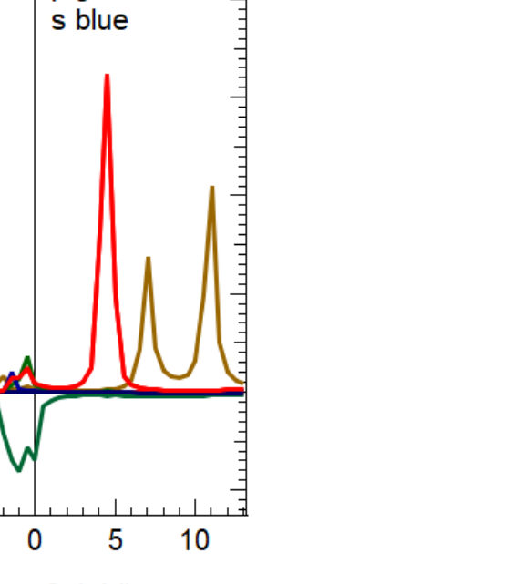
<figcaption class="paper-figure-caption"><b>Fig 3.</b> Figure 5</figcaption>
</figure>
</div>
<p><strong>Summary.</strong> This work uses advanced soft x-ray spectroscopy (RIPES) to probe the electronic structure of $ ext{CeO}_2$ and $   ext{UO}_2$. The primary finding is that the resonant features in $  ext{CeO}_2$ are strongly linked to the $    ext{Ce } 5d$ electronic states. By combining experiment and theory, the paper advances the understanding of charge transfer and electronic correlations in these important materials.</p>
<p><strong>Why it may be interesting.</strong> The investigation into core-level spectroscopy and the identification of specific orbital contributions ($5d$ states) to the electronic structure of highly correlated oxides like $  ext{CeO}_2$ is fundamental to understanding strongly correlated electron physics.</p>
<details>
<summary>Detailed structure</summary>
<p><strong>Main problem.</strong> The study investigates the electronic structure and resonant transitions in cerium and uranium oxides, specifically focusing on the soft x-ray Resonant Inverse Photoelectron Spectroscopy (RIPES) at the Ce M5 and U N5 edges.</p>
<p><strong>Main result.</strong> The analysis strongly suggests that the resonant features in $ ext{CeO}_2$ are driven by the $ ext{Ce } 5d$ states, showing a strong correlation between the RIPES signal and the $    ext{Ce } 5d$ unoccupied density of states.</p>
<p><strong>Method.</strong> The research combines advanced experimental techniques like RIPES, X-ray Emission Spectroscopy (XES), and Bremsstrahlung Isochromat Spectroscopy (BIS) with first-principles calculations (e.g., FEFF simulations).</p>
<p><strong>Model / system.</strong> The physical systems are cerium oxide ($    ext{CeO}_2$) and uranium dioxide ($   ext{UO}_2$). Theoretical modeling utilizes $    ext{CeO}_8$ clusters to approximate the local electronic environment of cerium in the oxide lattice.</p>
<p><strong>Key observables.</strong> RIPES spectra (measuring electron kinetic energy), XES spectra, and the unoccupied density of states (UDOS) projected onto specific orbitals (e.g., $  ext{Ce } 5d$).</p>
<p><strong>Important parameters / regimes.</strong> Soft x-ray energies ($  ext{h}
u \sim 800  ext{ eV}$), and the identification of specific electronic transitions (e.g., two-electron vs. single-electron processes).</p>
<p><strong>Assumptions / limitations.</strong> The analysis assumes that the observed resonant behavior can be explained by specific electronic transitions involving the $5d$ states, and that the final state in the process is shared between direct and indirect channels.</p>
<p><strong>Figures summary.</strong> Figures illustrate the RIPES measurements for $    ext{CeO}_2$ and $   ext{UO}_2$, showing resonant peaks, and compare these experimental results with theoretical calculations of the unoccupied density of states.</p>
<p><strong>Paper structure.</strong> The paper progresses by first presenting experimental observations on $    ext{UO}_2$ (suggesting two-electron events), then focusing on $ ext{CeO}_2$ to establish the $  ext{Ce } 5d$ involvement, and finally supporting this hypothesis through detailed comparison with theoretical calculations of the unoccupied density of states.</p>
</details>
<details>
<summary>Abstract</summary>
<p>The soft x-ray Resonant Inverse Photoelectron Spectroscopy (RIPES) of the M5 transition in cerium oxide and the N5 transition in uranium dioxide and supporting instrumentation is discussed. Further experimental evidence and analysis is presented to support the hypothesis that the Ce 5d states are intrinsic to the resonance process in cerium oxide. The strong connection with cerium dioxide is emphasized.</p>
</details>
<p><sub><a href="#top">↑ back to top</a></sub></p>

<p><a id="paper-2610.29457"></a></p>
<h3 id="short-qudit-triorthogonal-codes-from-doubling"><a href="http://arxiv.org/abs/2610.29457v1">Short qudit triorthogonal codes from doubling</a></h3>
<p><strong>Authors:</strong> Shiroman Prakash, K. L. Ramya<br>
<strong>Type:</strong> theory · <strong>Category:</strong> quantum information and computing · <strong>PDF:</strong> <a href="https://arxiv.org/pdf/2610.29457v1">https://arxiv.org/pdf/2610.29457v1</a><br>
<strong>Analysis basis:</strong> full PDF text, analyzed in chunks</p>
<div class="figure-strip-hint">↔ Scroll figures horizontally</div>
<div class="paper-figures-scroll">
<figure class="paper-figure-card">
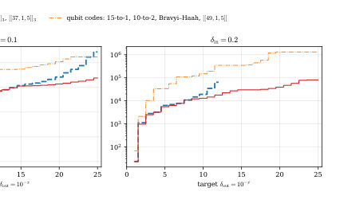
<figcaption class="paper-figure-caption"><b>Fig 1.</b> Figure 3: Cost C of the cheapest sequence of at most five rounds reaching δout ≤10−x, for three input noise levels. Dashed: the Prakash–Saha codes [14]; solid: these together with [[15, 1, 3]]3, [[28, 1, 4]]3 and [[37, 1, 5]]3; dash-dotted: qubit codes. For δin = 0.02 the dashed and solid curves coincide. A missing segment means that the target is not reached within five rounds.</figcaption>
</figure>
</div>
<p><strong>Summary.</strong> This paper introduces a novel 'doubling' construction method to create short, high-distance triorthogonal quantum error-correcting codes for qudits. By generalizing known techniques, the authors derive specific code parameters that outperform existing constructions. These codes are particularly valuable for reducing the resource cost in quantum state distillation protocols.</p>
<p><strong>Why it may be interesting.</strong> This work provides concrete, mathematically rigorous constructions for high-performance quantum error-correcting codes tailored for qudits, which is crucial for scaling up quantum computation beyond qubits.</p>
<details>
<summary>Detailed structure</summary>
<p><strong>Main problem.</strong> The paper focuses on constructing short qudit triorthogonal quantum error-correcting codes for qudits of odd prime dimension.</p>
<p><strong>Main result.</strong> The authors developed a 'doubling' construction that yields several short codes, such as $[[28, 1, 4]]_3$, which are shorter than existing codes of comparable distance.</p>
<p><strong>Method.</strong> The construction generalizes the doubling procedure by combining a triorthogonal seed code with a P-code (a code admitting a transversal phase gate), analyzed through algebraic and geometric moment vanishing conditions.</p>
<p><strong>Model / system.</strong> The underlying model is the theory of qudit quantum error correction, specifically focusing on triorthogonal codes which incorporate a transversal third-level diagonal gate. The physical application is improving qutrit magic state distillation.</p>
<p><strong>Key observables.</strong> Code parameters $[[n, k, d]]_p$ (length, dimension, distance), and the vanishing of multipole moments (up to octupole order) for the charge distribution representation.</p>
<p><strong>Important parameters / regimes.</strong> Odd prime dimension $p$, and the code distance $d$. The construction yields distance $d = \min(d_P, d_T + 2)$.</p>
<p><strong>Assumptions / limitations.</strong> The construction assumes the existence of a P-code $S$ and a seed $T$, and the geometric interpretation relates triorthogonality to the vanishing of multipole moments.</p>
<p><strong>Figures summary.</strong> The notes mention numerous listings and matrices of constructed codes (P-codes, Seeds, Doubled codes) for various parameters, detailing the resulting code parameters.</p>
<p><strong>Paper structure.</strong> The paper builds from defining the problem (triorthogonal codes) to introducing the core technique (doubling construction via Theorem 4), providing the mathematical framework (geometric interpretation via moments), and finally presenting specific, optimized code examples and bounds.</p>
</details>
<details>
<summary>Abstract</summary>
<p>We construct short triorthogonal codes for qudits of odd prime dimension by generalizing doubling, which combines a triorthogonal code with a code admitting a transversal phase gate, and raises the distance by up to two. This gives codes with parameters $[[28,1,4]]_3$, $[[37,1,5]]_3$, $[[72,1,6]]_3$, $[[118,1,8]]_3$, $[[33,1,5]]_5$ and $[[20,1,4]]_7$, each shorter than the cyclic, concatenated and Reed-Muller codes of the same distance, and a doubling construction of the $[[15,1,3]]_3$ code. When the columns of a generator matrix are regarded as charged points, triorthogonality becomes the vanishing of multipole moments up to octupole order, and doubling becomes a double layer of opposite charges; this picture explains why inputs with nontrivial coefficients can give shorter codes. We also show by exhaustive search that the shortest codes of distance three have length $11$ for $p=5$ and length $7$ for $p=7$. Combined with high-rate distance-two codes, the new codes reduce the cost of qutrit magic state distillation by up to an order of magnitude in regimes with high input noise.</p>
</details>
<p><sub><a href="#top">↑ back to top</a></sub></p>

<p><a id="paper-2610.30118"></a></p>
<h3 id="the-role-of-locality-and-weight-sharing-in-convolutional-neural-networks"><a href="http://arxiv.org/abs/2610.30118v1">The role of locality and weight sharing in convolutional neural networks</a></h3>
<p><strong>Authors:</strong> Francesco Mori, Melanie Weber<br>
<strong>Type:</strong> theory · <strong>Category:</strong> disordered systems and neural networks · <strong>PDF:</strong> <a href="https://arxiv.org/pdf/2610.30118v1">https://arxiv.org/pdf/2610.30118v1</a><br>
<strong>Analysis basis:</strong> full PDF text, analyzed in chunks</p>
<div class="figure-strip-hint">↔ Scroll figures horizontally</div>
<div class="paper-figures-scroll">
<figure class="paper-figure-card">
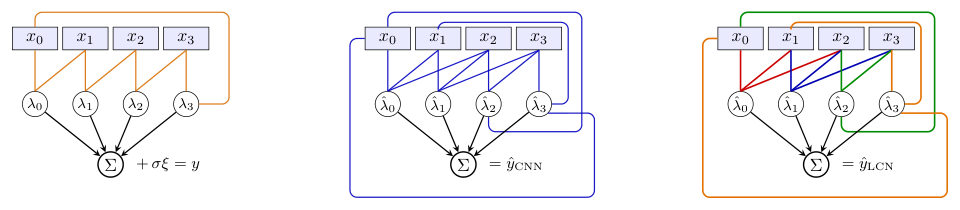
<figcaption class="paper-figure-caption"><b>Fig 1.</b> Figure 1: Teacher and the two student architectures with P input positions. Colors indicate weight sharing. The teacher is a two-layer CNN with kernel size kt. The CNN student has kernel size ks and weight sharing. The LCN has the same receptive fields as the CNN but no weight sharing. Boundary conditions are cyclic. Here, P = 4, ks = 3, and kt = 2.</figcaption>
</figure>
<figure class="paper-figure-card">

<figcaption class="paper-figure-caption"><b>Fig 2.</b> Figure 2: Generalization errors εCNN g (α) of the CNN and εLCN g (Pα) of the LCN. Lines are the order- parameter ODEs and symbols mark simulations of a single SGD trajectory. Insets show the ODE curves without the time rescaling. (a) For independent positions (c = 0) the trajectories coincide. (b) In the presence of spatial correlations (c = 0.5) the rescaling fails and the LCN converges faster (see inset). Parameters: g = erf, kt = 2, ks = 3, P = 4, η = 1, σ = 0, T = 1, SGD at D = 1000.</figcaption>
</figure>
<figure class="paper-figure-card">

<figcaption class="paper-figure-caption"><b>Fig 3.</b> Figure 3: CNN students that match the teacher kernel size (ks = kt) learn with OD(D) samples, while students with ks &gt; kt take OD(D log D) samples. (a) Generalization error vs. training time α for three kernel sizes, obtained by integrating the ODEs (17) from the order parameters of a random initialization at dimension D. (b) Specialization time αspec (Eq. (25), with γth = 0.99) against the feature dimension D. Markers are averages over random initializations, each obtained by integrating the ODEs (17) from the order parameters of a random initialization at dimension D. Standard errors are smaller than the marker size. Lines are fits a + b ln D. Parameters: D = 1012</figcaption>
</figure>
<figure class="paper-figure-card">

<figcaption class="paper-figure-caption"><b>Fig 4.</b> Figure 4: Alignment γs of the CNN kernel with the solution s vs. training time α, for (a) ks = 3 and (b) ks = 4. The dotted line marks the specialization time αspec and the dashed line γs = 0. Insets: probability ps that solution s is selected, over 4096 random initial conditions (dashed line: uniform). All curves are solutions of the ODEs (17). Parameters: D = 1012, g = erf, kt = 1, P = 6, S = I, η = 0.5, T = 1, σ = 0.</figcaption>
</figure>
<figure class="paper-figure-card">

<figcaption class="paper-figure-caption"><b>Fig 5.</b> Figure 3 shows that for ks = kt the error quickly decreases to zero and the specialization time αspec is D-independent. For ks &gt; kt, the generalization error displays a long plateau and then drops abruptly to zero when the student specializes at αspec = OD(log D). Interestingly, this plateau phase is the result of a particular symmetry of the dynamics. Consider the transformation acting on the order parameters as</figcaption>
</figure>
</div>
<p><strong>Summary.</strong> This theoretical paper analyzes the learning dynamics of CNNs versus LCNs in a teacher-student framework, quantifying the roles of locality and weight sharing. Using ODEs derived in the high-dimensional limit, it shows that while weight sharing provides a speedup for uncorrelated data, spatial correlations cause a complex crossover in performance, suggesting a transition point between the two network types.</p>
<p><strong>Why it may be interesting.</strong> The rigorous mathematical framework connecting network architecture constraints (locality/weight sharing) to learning dynamics, especially through ODEs, provides a powerful theoretical tool applicable to understanding complex, high-dimensional physical systems modeled by neural networks.</p>
<details>
<summary>Detailed structure</summary>
<p><strong>Main problem.</strong> The paper investigates how locality and weight sharing, key features of Convolutional Neural Networks (CNNs), separately influence the learning dynamics compared to locally connected networks (LCNs). It also examines how spatial correlations in the input data modify this advantage.</p>
<p><strong>Main result.</strong> For uncorrelated inputs, weight sharing grants a significant speedup in learning. However, for correlated inputs, the LCN exhibits superior performance at early times, while the CNN maintains an advantage at late times, with a predictable transition point.</p>
<p><strong>Method.</strong> The analysis employs a teacher-student model trained via online Stochastic Gradient Descent (SGD) and derives the learning dynamics exactly using Ordinary Differential Equations (ODEs) in the limit of infinite feature dimension (D).</p>
<p><strong>Model / system.</strong> The model compares CNNs and LCNs learning to approximate a convolutional teacher network acting on $P$ input positions with feature dimension $D$. The learning process is governed by the evolution of order parameters derived from the SGD dynamics.</p>
<p><strong>Key observables.</strong> Generalization error ($\epsilon_g$), asymptotic error ($\epsilon_\infty$), and the learning speedup factor.</p>
<p><strong>Important parameters / regimes.</strong> Spatial correlation ($c$), training time ($\alpha$), kernel sizes ($k_s, k_t$), and feature dimension ($D 	o \infty$).</p>
<p><strong>Assumptions / limitations.</strong> The analysis is rigorously derived in the thermodynamic limit ($D 	o \infty$) and relies on specific ansatzes for the order parameters.</p>
<p><strong>Figures summary.</strong> Figures illustrate the generalization error ($\epsilon_g$) comparison between CNN and LCN under varying correlations ($c$) and training times ($\alpha$), showing the crossover behavior and the dependence of the noise floor on $c$.</p>
<p><strong>Paper structure.</strong> The paper systematically derives ODEs for the learning dynamics of both network types, compares their performance in the uncorrelated limit ($c=0$), and then analyzes the impact of positive spatial correlations ($c>0$) on the asymptotic error and transient dynamics.</p>
</details>
<details>
<summary>Abstract</summary>
<p>The success of convolutional neural networks is often attributed to locality and weight sharing. However, how these two properties separately shape learning, and how their effects depend on the spatial correlations of natural images, remain poorly understood. We address these questions in a teacher-student model with a convolutional teacher acting on $P$ input positions with correlation $c$ between positions. We compare convolutional and locally connected students trained by online stochastic gradient descent, and derive ordinary differential equations that describe their dynamics exactly in the limit of large feature dimension $D$. For uncorrelated positions ($c = 0$), the two students follow the same learning trajectory, with the convolutional student learning exactly $P$ times faster. We also find that locality affects the sample complexity: a student that matches the kernel size of the teacher recovers it from $\mathcal{O}_{D}(D)$ samples, whereas $\mathcal{O}_{D}(D\log(D))$ samples are needed with a larger kernel. For $c > 0$, spatial correlations can reduce the advantage of weight sharing. The asymptotic error of the convolutional student grows with $c$, whereas that of the locally connected student is independent of $c$ and overall lower when evaluated at the same learning rate. When the learning rate is instead tuned to the training horizon, however, the locally connected student wins at early times and the convolutional student at late times, with a transition that we predict analytically.</p>
</details>
<p><sub><a href="#top">↑ back to top</a></sub></p>

<p><a id="paper-2610.30088"></a></p>
<h3 id="the-strengthened-quantum-hamming-bound-of-yu-lai-and-oh"><a href="http://arxiv.org/abs/2610.30088v1">The strengthened quantum Hamming bound of Yu, Lai, and Oh</a></h3>
<p><strong>Authors:</strong> Valery, Grishin, Aryeh Lev Zabokritskiy<br>
<strong>Type:</strong> theory · <strong>Category:</strong> quantum information and computing · <strong>PDF:</strong> <a href="https://arxiv.org/pdf/2610.30088v1">https://arxiv.org/pdf/2610.30088v1</a><br>
<strong>Analysis basis:</strong> full PDF text, analyzed in chunks</p>
<div class="figure-strip-hint">↔ Scroll figures horizontally</div>
<div class="paper-figures-scroll">
<figure class="paper-figure-card">

<figcaption class="paper-figure-caption"><b>Fig 1.</b> Low-resolution page preview, page 2</figcaption>
</figure>
<figure class="paper-figure-card">

<figcaption class="paper-figure-caption"><b>Fig 2.</b> Low-resolution page preview, page 3</figcaption>
</figure>
<figure class="paper-figure-card">

<figcaption class="paper-figure-caption"><b>Fig 3.</b> Low-resolution page preview, page 4</figcaption>
</figure>
<figure class="paper-figure-card">

<figcaption class="paper-figure-caption"><b>Fig 4.</b> Low-resolution page preview, page 5</figcaption>
</figure>
<figure class="paper-figure-card">

<figcaption class="paper-figure-caption"><b>Fig 5.</b> Low-resolution page preview, page 6</figcaption>
</figure>
</div>
<p><strong>Summary.</strong> This paper rigorously proves a strengthened quantum Hamming bound for quantum codes, extending the result to arbitrary exact quantum subspaces. It achieves this by developing sophisticated polynomial inequalities involving binomial expectations and analyzing associated quadratic forms. The work provides tighter theoretical limits on the performance of quantum error-correcting codes.</p>
<p><strong>Why it may be interesting.</strong> The rigorous mathematical tightening of bounds on quantum codes is fundamental to understanding the limits of quantum information processing and error correction capabilities.</p>
<details>
<summary>Detailed structure</summary>
<p><strong>Main problem.</strong> The paper proves the strengthened quantum Hamming bound of Yu, Lai, and Oh for arbitrary exact quantum subspaces, extending previous results from pure codes.</p>
<p><strong>Main result.</strong> The conjecture is proven, establishing a general inequality $K S_{n,e}^{t,\sigma} \le p^n$ for quantum codes, and deriving a polynomial inequality $Kf(0)\le p^n\mathbb{E}f(X)$ for $p\ge3$.</p>
<p><strong>Method.</strong> The proof employs advanced techniques involving polynomial inequalities, Krawtchouk transforms, and the analysis of quadratic forms derived from adjacent shifts to establish sharp bounds.</p>
<p><strong>Model / system.</strong> The study concerns quantum error-correcting codes, specifically analyzing subspaces of $(\mathbb{C}^p)^{\otimes n}$ using algebraic and combinatorial methods.</p>
<p><strong>Key observables.</strong> Code dimension ($K$), code length ($n$), local dimension ($p$), and the bound parameter $S_{n,e}^{t,\sigma}$.</p>
<p><strong>Important parameters / regimes.</strong> Local dimension $p \ge 2$, distance $d$, and interpolation parameters $t \ge 1$ and $e \in \{0, \ldots, t\}$.</p>
<p><strong>Assumptions / limitations.</strong> The proof relies on the existence of an optimal polynomial $f^*(x)$ that minimizes the expectation, and specific conditions on the polynomial $f$ (nonnegativity, degree).</p>
<p><strong>Paper structure.</strong> The structure moves from proving the main bound (Theorem 2.1) to establishing a general polynomial inequality (Theorem 2.2), which is then supported by detailed analysis involving polynomial minimization, quadratic forms, and recursive relations derived from adjacent shifts.</p>
</details>
<details>
<summary>Abstract</summary>
<p>We prove a conjecture of Yu, Lai, and Oh: their rounded family of strengthened quantum Hamming bounds, which interpolates between Hamming-type bounds and the Singleton bound, holds for arbitrary exact quantum subspaces of dimension $K>1$. The result covers every integer local dimension $p\ge2$, every integer $t\ge1$, both distances $2t+1$ and $2t+2$, and every interpolation parameter $e\in\{0,\ldots,t\}$. Yu, Lai, and Oh proved these bounds for pure codes and for general codes of distance three or four; the case $e=0$ contains the ordinary quantum Hamming bound for general codes, recently proved by Zhang and Chen. More generally, for $p\ge3$, we prove the inequality $Kf(0)\le p^n\mathbb{E}f(X)$, where $X\sim\operatorname{Bin}(n,1-p^{-2})$, for every real polynomial $f$ of degree at most $D$, with $2\le D<d$, that is nonnegative on $\{0,\ldots,n\}$ and positive at zero; here $n$ and $d$ are the code length and distance.</p>
</details>
<p><sub><a href="#top">↑ back to top</a></sub></p>

<p><a id="paper-2610.30052"></a></p>
<h3 id="tight-bounds-on-the-randomized-communication-complexity-of-vector-in-subspace"><a href="http://arxiv.org/abs/2610.30052v1">Tight Bounds on the Randomized Communication Complexity of Vector-in-Subspace</a></h3>
<p><strong>Authors:</strong> Chengu Wang<br>
<strong>Type:</strong> theory · <strong>Category:</strong> quantum information and computing · <strong>PDF:</strong> <a href="https://arxiv.org/pdf/2610.30052v1">https://arxiv.org/pdf/2610.30052v1</a><br>
<strong>Analysis basis:</strong> full PDF text, analyzed in chunks</p>
<div class="figure-strip-hint">↔ Scroll figures horizontally</div>
<div class="paper-figures-scroll">
<figure class="paper-figure-card">

<figcaption class="paper-figure-caption"><b>Fig 1.</b> Low-resolution page preview, page 2</figcaption>
</figure>
<figure class="paper-figure-card">

<figcaption class="paper-figure-caption"><b>Fig 2.</b> Low-resolution page preview, page 3</figcaption>
</figure>
<figure class="paper-figure-card">

<figcaption class="paper-figure-caption"><b>Fig 3.</b> Low-resolution page preview, page 4</figcaption>
</figure>
<figure class="paper-figure-card">

<figcaption class="paper-figure-caption"><b>Fig 4.</b> Low-resolution page preview, page 5</figcaption>
</figure>
<figure class="paper-figure-card">

<figcaption class="paper-figure-caption"><b>Fig 5.</b> Low-resolution page preview, page 6</figcaption>
</figure>
</div>
<p><strong>Summary.</strong> This theoretical paper establishes the tight communication complexity for the Vector-in-Subspace problem, proving it is $\Theta(\sqrt{n})$. The work achieves this by employing sophisticated mathematical tools, including Gaussian moment bounds and spherical harmonic analysis. This result highlights a significant quantum advantage over classical communication protocols for a fundamental geometric problem.</p>
<p><strong>Why it may be interesting.</strong> The result demonstrates a clear geometric example of an exponential quantum advantage over classical communication, which is a central theme in quantum information theory.</p>
<details>
<summary>Detailed structure</summary>
<p><strong>Main problem.</strong> The paper determines the tight randomized communication complexity of the Vector-in-Subspace (VSPn) problem.</p>
<p><strong>Main result.</strong> The randomized communication complexity is proven to be $\Theta(\sqrt{n})$, matching the known upper bound and improving previous lower bounds.</p>
<p><strong>Method.</strong> The proof utilizes advanced techniques involving Gaussian moment bounds over complete rectangle partitions and spherical harmonic analysis.</p>
<p><strong>Model / system.</strong> The VSPn problem involves Alice holding a unit vector $u \in \mathbb{R}^n$ and Bob holding an $n/2$-dimensional subspace $H$, requiring them to distinguish if $u$ lies in $H$ or its orthogonal complement $H^\perp$.</p>
<p><strong>Key observables.</strong> Randomized communication complexity $  ext{R}_{1/3}(   ext{VSP}_n)$, quantum advantage (qubits used).</p>
<p><strong>Important parameters / regimes.</strong> Dimension $n$, error probability ($1/3$), communication cost $d$.</p>
<p><strong>Assumptions / limitations.</strong> The analysis relies on establishing Gaussian moment bounds and controlling signed conditional moments via Gaussian measure decomposition.</p>
<p><strong>Paper structure.</strong> The paper builds upon the harmonic-analysis framework used in related work, establishing moment bounds through polynomial-moment induction and culminating in the $\Theta(\sqrt{n})$ bound for the communication complexity.</p>
</details>
<details>
<summary>Abstract</summary>
<p>We prove that the randomized communication complexity of Vector-in-Subspace in $\mathbb R^n$ with error at most $1/3$ is $Θ(\sqrt n)$. Alice holds a unit vector $u$ and Bob holds an $n/2$-dimensional subspace $H$; they must distinguish $u\in H$ from $u\in H^\perp$. An exact one-way quantum protocol uses $O(\log n)$ qubits, making the problem a geometric example of an exponential quantum advantage over interactive classical communication. Our lower bound matches Raz's $O(\sqrt n)$ upper bound, improves the $Ω(n^{1/3})$ lower bound of Klartag and Regev, and removes the total-rank restriction in Grupel's $Ω(\sqrt n)$ result.   The proof establishes a Gaussian moment bound over complete rectangle partitions. A complex Gaussian representation yields a vanishing even moment whose cancellation is preserved when averaging over the partition. We control the signed conditional moments around a real center by decomposing conditional Gaussian measures into fixed coordinates and sub-Gaussian components. Combining this estimate with spherical harmonic analysis gives the communication lower bound.</p>
</details>
<p><sub><a href="#top">↑ back to top</a></sub></p>

<p><a id="paper-2610.29180"></a></p>
<h3 id="valence-driven-structural-transformation-and-phase-coexistence-in-chemically-substituted-eupd2si2"><a href="http://arxiv.org/abs/2610.29180v1">Valence-Driven Structural Transformation and Phase Coexistence in Chemically Substituted EuPd2Si2</a></h3>
<p><strong>Authors:</strong> Masoud Mardani, Shivani Sharma, Saul H. Lapidus, Theo Siegrist<br>
<strong>Type:</strong> experiment · <strong>Category:</strong> strongly correlated electrons · <strong>PDF:</strong> <a href="https://arxiv.org/pdf/2610.29180v1">https://arxiv.org/pdf/2610.29180v1</a><br>
<strong>Analysis basis:</strong> full PDF text, analyzed in chunks</p>
<div class="figure-strip-hint">↔ Scroll figures horizontally</div>
<div class="paper-figures-scroll">
<figure class="paper-figure-card">

<figcaption class="paper-figure-caption"><b>Fig 1.</b> Figure 1: (a) Crystal structure of EuPd2Si2 projected approximately along the [110]-direction, highlighting interatomic distances. The figures in (b) and (c) are created by superimposing the structure of two tetragonal phases belonging to Eu2+Pd2Si2 and Eu3+ Pd2Si2 to visualize the changes in various bonds in different orientation. The dark color pink, grey and blue atoms are Eu, Pd and Si atoms respectively, belonging to Eu2+Pd2Si2 whereas the light color atoms belong to Eu3+Pd2Si2 phase.</figcaption>
</figure>
<figure class="paper-figure-card">

<figcaption class="paper-figure-caption"><b>Fig 2.</b> Figure 2: Rietveld refined synchrotron X-ray patterns taken at room temperature of (a) EPS, (b) EPS-Ge2.5% and (c) EPS-Ge5% using a two-phase model (Eu2+Pd2Si2+Pd2Si). The inset in each</figcaption>
</figure>
<figure class="paper-figure-card">

<figcaption class="paper-figure-caption"><b>Fig 3.</b> Figure 3: Magnetic susceptibility of (a,b) EPS and (c,d) EPS-Ge2.5% as a function of temperature (-vs-T) and magnetic field (M-vs-H). The inset in (a) and (c) presents the low temperature -vs- T data for respective samples.</figcaption>
</figure>
<figure class="paper-figure-card">

<figcaption class="paper-figure-caption"><b>Fig 4.</b> Figure 4: Heat capacity of EPS as a function of temperature. The latent heat around Tv is released/taken up over an extended temperature range.</figcaption>
</figure>
<figure class="paper-figure-card">

<figcaption class="paper-figure-caption"><b>Fig 5.</b> Figure 5: (a) Stacked reflection profiles of the (004) and (200) reflections at selected temperatures. (b) Temperature dependence of the full width at half maximum (FWHM), highlighting a gradual increase well above below Tv, with a sharp rise below 120 K. For temperatures where two peaks</figcaption>
</figure>
</div>
<p><strong>Summary.</strong> This work uses synchrotron X-ray diffraction and magnetic measurements to study the valence transition in $    ext{EuPd}_2 ext{Si}_2$ and its Ge-substituted analogs. The key finding is that the transition involves structural phase coexistence between $   ext{Eu}^{2+}$ and $ ext{Eu}^{3+}$ phases. The study establishes a quantitative, inverse linear relationship between the lattice parameter and the transition temperature, providing a predictive framework for related materials.</p>
<p><strong>Why it may be interesting.</strong> The strong coupling between electronic valence changes and measurable structural parameters (lattice constants, phase coexistence) provides a concrete example of how electronic correlations manifest macroscopically in the solid state.</p>
<details>
<summary>Detailed structure</summary>
<p><strong>Main problem.</strong> The study investigates the origin and structural consequences of the temperature-induced europium valence instability in $    ext{EuPd}_2 ext{Si}_2$ and its chemically substituted variants.</p>
<p><strong>Main result.</strong> The valence transition is confirmed to be associated with structural phase coexistence between $   ext{Eu}^{2+}$ and $ ext{Eu}^{3+}$ phases, suggesting a phase-segregated ground state rather than a homogeneous mixed-valence state.</p>
<p><strong>Method.</strong> The research employed temperature-dependent synchrotron X-ray diffraction (XRD) and magnetic susceptibility measurements on polycrystalline samples.</p>
<p><strong>Model / system.</strong> The system is the intermetallic compound $  ext{EuPd}<em 2-x>2 ext{Si}_2$ and its solid solutions formed by substituting Si with Ge ($ ext{EuPd}_2 ext{Si}</em>$) and lattice structure.}   ext{Ge}_x$). The focus is on the interplay between electronic valence state ($    ext{Eu}^{2+}$ vs $  ext{Eu}^{3+</p>
<p><strong>Key observables.</strong> Transition temperature ($T_v$), lattice parameters ($a, c$), XRD peak splitting/broadening, Full Width at Half Maximum (FWHM), and magnetic susceptibility ($\chi(T)$).</p>
<p><strong>Important parameters / regimes.</strong> Temperature (T), Ge substitution concentration ($x$), and lattice parameter ($a$).</p>
<p><strong>Assumptions / limitations.</strong> The structural changes observed at low temperatures are attributed to the valence instability rather than standard thermal contraction, and an empirical linear relationship between $T_v$ and lattice parameter is proposed.</p>
<p><strong>Figures summary.</strong> Figures illustrate the crystal structure, the systematic shift of $T_v$ with Ge substitution, and the correlation between lattice parameters and $T_v$ via linear fitting.</p>
<p><strong>Paper structure.</strong> The paper systematically analyzes the structural and magnetic data across different Ge concentrations, confirming phase coexistence via XRD peak splitting and establishing an empirical relationship between the lattice parameter and the transition temperature.</p>
</details>
<details>
<summary>Abstract</summary>
<p>EuPd2Si2 serves as an ideal system to probe the interplay between lattice dynamics and electronic instabilities through its tunable valence transition, responsive to temperature, pressure, and magnetic field. Here, we focus on investigating the origin of the temperature-induced europium valence instability in pristine EuPd2Si2, alloyed EuPd2Si1.95Ge0.05, and EuPd2Si1.9Ge0.1 and its correlation with structural responses. Compared with the parent compound EuPd2Si2 which exhibits the europium valence transition at Tv = 143 K, magnetic susceptibility measurements reveal a systematic shift in Tv with Ge substitution, decreasing to 87 K for EuPd2Si1.95Ge0.05. Temperature-dependent synchrotron X-ray diffraction confirms phase coexistence between Eu2+Pd2Si2-xGex and Eu3+Pd2Si2-xGex phases across the valence transition for all samples measured (x = 0, 0.05, 0.10). The pronounced increase in the full width at half maximum (FWHM) well above Tv reflects the gradual nature of the transformation and highlights the role of structural strain in stabilizing the coexisting phases, supporting the presence of a phase-segregated ground state, in contrast to a homogeneous intermediate-valence or mixed-valence state. The variation in Tv across different compositions correlates with changes in lattice parameters, highlighting the robust coupling between the structural and electronic degrees of freedom. The phase diagram suggests an inverse linear relationship between the lattice parameter and Tv, suggesting a possible predictive framework for estimating transition temperatures in other chemically substituted variants of this family.</p>
</details>
<p><sub><a href="#top">↑ back to top</a></sub></p>
</details>
<h2 id="secondary-cond-mat-archives">Secondary cond-mat archives</h2>
<p><em>Papers from cond-mat.mtrl-sci, mes-hall, other, soft, supr-con. These archives are de-prioritized — they appear at the end regardless of relevance score.</em></p>
<h3 id="relevant-in-secondary-archives-13">Relevant in secondary archives (13)</h3>

<p><a id="paper-2610.29446"></a></p>
<h3 id="suppressing-majorana-hybridization-in-atomically-assembled-cr-chains-on-bi2pd"><a href="http://arxiv.org/abs/2610.29446v1">Suppressing Majorana Hybridization in Atomically Assembled Cr Chains on Bi2Pd</a></h3>
<p><strong>Authors:</strong> Jinkyung Kim, Piotr Kot, Ryo Ogawa, Atustaka Maeda, Andreas J. Heinrich, Nicolas Lorente, Deung-Jang Choi<br>
<strong>Type:</strong> both · <strong>Category:</strong> other · <strong>PDF:</strong> <a href="https://arxiv.org/pdf/2610.29446v1">https://arxiv.org/pdf/2610.29446v1</a><br>
<strong>Analysis basis:</strong> full PDF text, analyzed in chunks
<strong>Topic relevance:</strong> <code>QC/QI experiment</code> <strong>3/5</strong> · <code>analog quantum simulation</code> <strong>3/5</strong> · <code>Keldysh / 2PI / non-Gaussian methods</code> <strong>2/5</strong> · <code>methods for driven-dissipative</code> <strong>2/5</strong> · <code>Frenkel-Kontorova</code> <strong>1/5</strong> · <code>driven-dissipative phase transition</code> <strong>1/5</strong> · <code>quantum measurements</code> <strong>1/5</strong></p>
<div class="figure-strip-hint">↔ Scroll figures horizontally</div>
<div class="paper-figures-scroll">
<figure class="paper-figure-card">

<figcaption class="paper-figure-caption"><b>Fig 1.</b> FIG. 1. (a) Schematic of the STM junction used to assemble and probe Cr spin chains on the superconducting β-Bi2Pd surface. The experiment combines atom-by-atom construc- tion with local tunnelling spectroscopy to follow the finite-size evolution of Shiba-chain end modes. (b) Atomic structure of the chains, with Cr adatoms aligned along the ⟨110⟩direction of the Bi-terminated surface. The surface consists of a top Bi layer, followed by Pd and Bi layers stacked along the z axis. (c–f) Constant-current STM images of Cr4, Cr5, Cr8, and Cr12 chains assembled atom by atom. STM parameters: V = 3 mV, I = 50 pA, scan area 5 × 5 nm2.</figcaption>
</figure>
<figure class="paper-figure-card">

<figcaption class="paper-figure-caption"><b>Fig 2.</b> FIG. 2. (a) Spatially resolved differential-conductance maps acquired along Crx chains with x = 4, 5, 8, 12, plotted as a function of position along the chain and applied bias. (b) Computed LDOS showing the same qualitative evolution with increasing chain length as in the experiment in (a): the in-gap YSR states approach zero energy for Cr4, the Shiba-band gap closes near Cr5, and a gap reopens for longer chains. In Cr12, the reopened gap is accompanied by zero-bias resonances localized near the two chain ends. This length-controlled closing and reopening of the gap marks the entrance into the confined Shiba-chain regime whose localization length is quantified in Fig. 4.</figcaption>
</figure>
<figure class="paper-figure-card">

<figcaption class="paper-figure-caption"><b>Fig 3.</b> Figure 4 addresses this point for the Cr12 chain. A constant-current profile over the chain is shown in Fig. 4(a), while Fig. 4(b) shows the corresponding zero- bias conductance profile along the same chain. The spec- tral weight is concentrated near the two ends and is strongly reduced in the central region, indicating com- pact end-localized modes. The calculation for an ideal chain of identical Cr atoms [Fig. 4(c)] gives nearly mirror- symmetric zero-energy profiles at the two ends. However, the experimental profile in (b) displays a clear imbalance between the two edge amplitudes.</figcaption>
</figure>
<figure class="paper-figure-card">

<figcaption class="paper-figure-caption"><b>Fig 4.</b> FIG. 3. (a) Calculated in-gap transverse spin component ⟨Sx⟩for Crx chains with x = 4, 5, 8, 12, plotted as a func- tion of position and energy. Short chains display alternat- ing transverse spin contrast induced by the strong surface spin–orbit coupling. For Cr8 and Cr12, the zero-energy spec- tral weight develops opposite-sign transverse spin features localized near the two chain ends, consistent with the for- mation of symmetry-related end modes. (b) The longitudi- nal spin component ⟨Sz⟩show predominantly ferromagnetic alignment, with spin-down and spin-up character associated with electron-like and hole-like branches, respectively. The continuous evolution of ⟨Sz⟩through zero energy...</figcaption>
</figure>
<figure class="paper-figure-card">

<figcaption class="paper-figure-caption"><b>Fig 5.</b> FIG. 4. (a) Constant-current STM topography along the Cr12 chain. Vertical dashed lines indicate the Cr atom posi- tions. (b) Zero-bias differential conductance dI/dV (V = 0) measured along the same chain, showing spectral weight lo- calized near the two ends and a reduced signal in the central region. (c) Calculated zero-energy LDOS for an ideal chain of identical Cr atoms, yielding nearly mirror-symmetric end profiles. (d) Calculated zero-energy LDOS including a weak linear variation of the local exchange coupling J.</figcaption>
</figure>
</div>

<p><strong>Summary.</strong> This research reports on the assembly of magnetic Cr chains on a superconducting $ ext{Bi}_2   ext{Pd}$ surface to study Majorana zero modes. By combining STM measurements and advanced Green's function theory, the authors demonstrate that the hybridization of end modes is strongly suppressed, evidenced by a measurable, short localization length. This work advances the feasibility of using engineered superconducting heterostructures for topological quantum computation.</p>
<p><strong>Why it may be interesting.</strong> This work provides a concrete, experimentally realized platform for studying topological superconductivity, directly addressing the critical issue of finite-size effects on Majorana modes, which is highly relevant to quantum computing hardware.</p>
<details>
<summary>Detailed structure</summary>
<p><strong>Main problem.</strong> The primary goal is to demonstrate and theoretically explain the suppression of Majorana zero mode (MZM) hybridization in finite magnetic-atom chains assembled on a superconducting surface.</p>
<p><strong>Main result.</strong> The experiment shows a chain-length-driven evolution of the in-gap spectrum, and calculations extract a short localization length ($\xi_M \approx 3$ sites), confirming the stability of zero-energy end modes.</p>
<p><strong>Method.</strong> The study combines scanning tunneling spectroscopy (STM) measurements of the local density of states (LDOS) with theoretical modeling using Green's function calculations (Bogoliubov-de Gennes formalism).</p>
<p><strong>Model / system.</strong> The system involves Cr magnetic atoms assembled into chains on the Bi-terminated surface of the superconductor $    ext{Bi}_2   ext{Pd}$. The physics is modeled using impurity Hamiltonians within the Nambu Green's function framework.</p>
<p><strong>Key observables.</strong> In-gap spectrum evolution (YSR state closing/reopening), zero-bias conductance localized at chain ends, and the extracted Majorana localization length ($\xi_M$).</p>
<p><strong>Important parameters / regimes.</strong> The localization length ($\xi_M \approx 10.5 	ext{ \AA}$ or $\sim 3$ sites), the superconducting gap ($\Delta_{	ext{topo}} \approx 204 \mu	ext{eV}$), and the Rashba coupling ($\alpha_R$).</p>
<p><strong>Assumptions / limitations.</strong> The interpretation assumes that the observed zero-bias peaks are indeed Majorana-like end states, and theoretical calculations rely on the dilute-impurity framework.</p>
<p><strong>Figures summary.</strong> Figures illustrate the length-controlled gap closing/reopening via $   ext{d}I/    ext{d}V$ maps, the concentration of zero-bias spectral weight at the ends, and spin-resolved LDOS showing spin texture evolution.</p>
<p><strong>Paper structure.</strong> The paper follows a structure of presenting experimental observations (STM measurements of $   ext{d}I/    ext{d}V$ vs. chain length) which are then explained and quantified using detailed theoretical calculations (Green's functions, localization length extraction, and analysis of coupling variations).</p>
</details>
<details>
<summary>Abstract</summary>
<p>Magnetic-atom chains on superconductors can host Majorana zero modes, but in finite chains the two end modes generally hibridize and split away from zero energy. We show that Cr chains assembled atom-by-atom on the Bi-terminated surface of Bi2Pd enter a short-localization-length Shiba chain regime wthat strongly suppreesses this finite-size hybridization. Scanning tunneling spectroscopy reveals a chaing-leght-driven closing and reopening of the in-gap spectrum, followed by zero-bias modes localized at the chains ends. Green-function calculations reproduce the evolution and show an exchange of electorn-holec haracter across the transition. From the residual splitting we extract a localization length of about three atomic sites, explaining the stability of the zero-energy modes in experimentally accessible chains.</p>
</details>
<p><sub><a href="#top">↑ back to top</a></sub></p>

<p><a id="paper-2610.29447"></a></p>
<h3 id="room-temperature-near-infrared-optical-readout-of-triplet-spin-states-integrated-in-carbon-nanotubes-towards-quantum-sensing"><a href="http://arxiv.org/abs/2610.29447v1">Room-temperature near-infrared optical readout of triplet spin states integrated in carbon nanotubes towards quantum sensing</a></h3>
<p><strong>Authors:</strong> J. Alejandro de Sousa, Ilias Vandevenne, Jana Nikolić, Tuur Boonen, Etienne Goovaerts, Sofie Cambré<br>
<strong>Type:</strong> experiment · <strong>Category:</strong> other · <strong>PDF:</strong> <a href="https://arxiv.org/pdf/2610.29447v1">https://arxiv.org/pdf/2610.29447v1</a><br>
<strong>Analysis basis:</strong> full PDF text, analyzed in chunks
<strong>Topic relevance:</strong> <code>QC/QI experiment</code> <strong>3/5</strong> · <code>quantum optics experiment</code> <strong>3/5</strong> · <code>analog quantum simulation</code> <strong>2/5</strong> · <code>quantum measurements</code> <strong>2/5</strong></p>
<div class="figure-strip-hint">↔ Scroll figures horizontally</div>
<div class="paper-figures-scroll">
<figure class="paper-figure-card">

<figcaption class="paper-figure-caption"><b>Fig 1.</b> Figure 1. Room-temperature ODMR of functionalized SWCNTs. (a) Schematic</figcaption>
</figure>
<figure class="paper-figure-card">

<figcaption class="paper-figure-caption"><b>Fig 2.</b> Figure 2. Dependence on defect density, halogen atom and laser power. (a) Normalized (to the 𝐸11</figcaption>
</figure>
<figure class="paper-figure-card">

<figcaption class="paper-figure-caption"><b>Fig 3.</b> Figure 3. Temperature-dependent ODMR contrasts (a) Schematics of a randomly oriented solution</figcaption>
</figure>
<figure class="paper-figure-card">

<figcaption class="paper-figure-caption"><b>Fig 4.</b> Figure 4. Angular-dependent ODMR spectra of in-plane aligned (6,5)-Br SWCNT films (a)</figcaption>
</figure>
<figure class="paper-figure-card">

<figcaption class="paper-figure-caption"><b>Fig 5.</b> Fig. 13 for individual angles), (e) angular-dependent room-temperature ODMR spectra and (f) low-</figcaption>
</figure>
</div>

<p><strong>Summary.</strong> This paper reports on using engineered halogen-functionalized defects in single-wall carbon nanotubes (SWCNTs) as robust, room-temperature quantum spin qubits. By performing ODMR spectroscopy, the authors demonstrate optical control and readout of triplet spin states. This establishes SWCNTs as a promising, scalable solid-state platform for ambient quantum sensing.</p>
<p><strong>Why it may be interesting.</strong> This work bridges solid-state defect physics, quantum optics, and sensing, providing a concrete, scalable solid-state platform for quantum information processing that operates outside cryogenic environments.</p>
<details>
<summary>Detailed structure</summary>
<p><strong>Main problem.</strong> The central goal is to develop optically addressable electron-spin qubits that function robustly at room temperature and ambient conditions for advancing quantum sensing applications.</p>
<p><strong>Main result.</strong> The researchers successfully demonstrated optical initialization and readout of triplet spin states in defect-functionalized SWCNTs at room temperature, showing potential for on-chip quantum sensing.</p>
<p><strong>Method.</strong> The study combines Optically Detected Magnetic Resonance (ODMR) spectroscopy measurements with detailed theoretical simulations using a spin Hamiltonian package.</p>
<p><strong>Model / system.</strong> The platform utilizes para-halophenyl quantum defects ($    ext{-Cl}$, $    ext{-Br}$, $    ext{-I}$) incorporated into (6,5) single-wall carbon nanotubes (SWCNTs) to trap triplet excitons. These defects provide a stable spin-photon interface operable under ambient conditions.</p>
<p><strong>Key observables.</strong> ODMR contrast ($\Delta P_L / P_L$), microwave resonance dips, and temperature/power dependence of the spin signals.</p>
<p><strong>Important parameters / regimes.</strong> Room temperature operation, near-infrared emission (biological window), and the spin Hamiltonian parameters ($g$-tensor, Zero-field splitting parameters $D, E$).</p>
<p><strong>Assumptions / limitations.</strong> The negative ODMR contrast assignment relies on the assumption that $    ext{sp}^3$-defects yield states with their Z-axis parallel to the CNT axis; furthermore, room-temperature observations are considered 'conservative' due to potential laser-induced heating.</p>
<p><strong>Figures summary.</strong> Figures illustrate ODMR spectra showing dependence on halogen substitution, defect density, magnetic field orientation, temperature, and external molecule concentration (e.g., TEMPO).</p>
<p><strong>Paper structure.</strong> The paper progresses from establishing the physical platform and initial room-temperature measurements to detailed modeling using spin Hamiltonians, followed by systematic investigation of temperature, power, and external analyte interactions (like TEMPO).</p>
</details>
<details>
<summary>Abstract</summary>
<p>Optically addressable electron spin qubits that function at room temperature and under ambient conditions are essential for advancing quantum sensing. Solid state defect platforms offer robust spin-photon interfaces but lack precise defect positioning and electronic tunability. Molecular spin qubits enable bottom up chemical design yet suffer from limited photostability. Here, we introduce para-halophenyl (-Cl, -Br and -I) quantum defects in (6,5) single wall carbon nanotubes that trap triplet excitons with a spin-photon interface that is operable under ambient, room temperature conditions. These defects were shown to emit in the near infrared within the biological transparency window, and their placement on the nanotube surface provides nanoscale proximity to target environments. The deep optical traps formed by the defects yield exceptional photostability. Here, we demonstrate optical initialization and readout of these triplet states at room temperature, provide proof of principle sensing of paramagnetic molecules, and highlight potential for on chip detection. Together, these results establish SWCNT defects as a promising new platform for future quantum sensing.</p>
</details>
<p><sub><a href="#top">↑ back to top</a></sub></p>

<p><a id="paper-2610.29972"></a></p>
<h3 id="chiral-near-fields-at-achiral-plasmonic-tips-enable-nanoscale-valley-polarimetry"><a href="http://arxiv.org/abs/2610.29972v1">Chiral near-fields at achiral plasmonic tips enable nanoscale valley polarimetry</a></h3>
<p><strong>Authors:</strong> Jonggeun Hwang, Kijeong Park, Hyeongwoo Lee, Yeonjeong Koo, SeokJae Yoo, Long Ju, Kyoung-Duck Park<br>
<strong>Type:</strong> experiment · <strong>Category:</strong> other · <strong>PDF:</strong> <a href="https://arxiv.org/pdf/2610.29972v1">https://arxiv.org/pdf/2610.29972v1</a><br>
<strong>Analysis basis:</strong> full PDF text, analyzed in chunks
<strong>Topic relevance:</strong> <code>interference shaping light</code> <strong>3/5</strong> · <code>quantum optics experiment</code> <strong>2/5</strong> · <code>quantum measurements</code> <strong>1/5</strong></p>
<div class="figure-strip-hint">↔ Scroll figures horizontally</div>
<div class="paper-figures-scroll">
<figure class="paper-figure-card">

<figcaption class="paper-figure-caption"><b>Fig 1.</b> FIG. 1. Illustration of c-TEPL spectroscopy and nanoscale valley polarization heterogeneity. (a) Schematic of c-TEPL, in which oblique circularly polarized excitation generates a helicity-preserving near-field at an achiral Au tip for valley-resolved PL detection. (b) Conceptual excitation-power dependence of the helicity-resolved PL contrast at θinc = 35◦and 90◦. (c) Strain-induced modification of intervalley scattering pathways in a TMD monolayer. γint denotes the intervalley scattering rate, γind the indirect intervalley scattering rate, Gσ−the generation rate of the K′ excitons, and γ+ and γ−the radiative recombination rates of valley-polarized excitons. (d) Schematic of valley-...</figcaption>
</figure>
<figure class="paper-figure-card">

<figcaption class="paper-figure-caption"><b>Fig 2.</b> FIG. 2. Experimental demonstration of c-TEPL-based nanoscale valley polarimetry. (a), (b) c-TEPL spectra measured under σ−and σ+ excitation, respectively. (c) c-TEPL spectra acquired under linearly polarized excitation. (d) Excitation intensity dependence of the near-field DOP magnitude (blue and red) and the far-field DOP (black). The error bars represent the standard deviation. (e), (f) Contour maps of gap- dependent TEPL spectra obtained under CPL and LPL excitation. (g) Gap-dependent DOP under two different excitation polarizations. The DOP increases sharply for CPL excitation at tip-sample distances below 10 nm, whereas LPL excitation produces strong PL enhancement without a...</figcaption>
</figure>
<figure class="paper-figure-card">

<figcaption class="paper-figure-caption"><b>Fig 3.</b> FIG. 3. Numerical simulation results for c-TEPL as a function of incidence angle. (a) Normalized near-field intensity, |E|2/|E0|2, in the xz-plane for θinc = 35◦. (b), (c) In-plane Stokes parameters S0,∥and S3,∥in the xy plane, respectively, evaluated 1 nm below the tip apex. (d) Spatial distributions of the Stokes parameter S3,∥in the same plane as (c) for θinc = 90◦. The dashed circle has a radius equal to the tip’s radius of curvature. All scale bars are 20 nm. (e) S3,∥for the near-field and far-field in the xy-plane as a function of θinc. The plotted near-field S3,∥values are taken at the maximum-S3,∥position (small white circle in (c)). (f) θinc-dependent in-plane and out-of-plane...</figcaption>
</figure>
<figure class="paper-figure-card">

<figcaption class="paper-figure-caption"><b>Fig 4.</b> FIG. 4. Nanoscale DOP imaging of a suspended TMD monolayer across a nanogap. (a), (b) c-TEPL images of the σ+ PL and σ−PL. The insets show spectra acquired at the marked positions. (c) Nanoscale DOP image, ρNF, obtained from (a) and (b). The black dashed lines indicate the boundaries of the nanogap. (d) Trion-to-exciton ratio (X-/X0) map, obtained from Lorentzian fits to the TEPL spectra. (e)-(g) Line profiles across the nanogap showing X-/X0, σ+ and σ−PL intensities, and DOP, respectively. The shaded area marks the nanogap region. (h) Far-field DOP map of the nanogap region measured by confocal PL microscopy. (i) Comparison of far-field DOP (black squares) and near-field DOP (green...</figcaption>
</figure>
</div>

<p><strong>Summary.</strong> The paper introduces chiral tip-enhanced photoluminescence (c-TEPL) as a novel technique to measure valley polarization in 2D semiconductors. By controlling the angle of circularly polarized light incident on an achiral plasmonic tip, the researchers generate a localized, helicity-preserving near-field. This allows for nanoscale mapping of valley polarization, revealing strain-induced effects previously hidden by conventional, diffraction-limited measurements.</p>
<p><strong>Why it may be interesting.</strong> This work provides a powerful, non-destructive optical tool to probe fundamental quantum properties (valley polarization) at the nanoscale, which is crucial for designing next-generation 2D electronic and photonic devices.</p>
<details>
<summary>Detailed structure</summary>
<p><strong>Main problem.</strong> The primary challenge is achieving nanoscale valley polarimetry to locally resolve the degree and sign of valley polarization in atomically thin semiconductors, overcoming the limitations of diffraction-limited measurements.</p>
<p><strong>Main result.</strong> The authors demonstrate that using chiral near-fields generated at achiral plasmonic tips enables valley polarimetry, successfully revealing nanoscale variations in valley polarization in strained MoS2.</p>
<p><strong>Method.</strong> The core technique is Chiral Tip-Enhanced Photoluminescence (c-TEPL), which measures the difference in photoluminescence intensity when exciting with $\sigma^+$ versus $\sigma^-$ circularly polarized light.</p>
<p><strong>Model / system.</strong> The study uses monolayer Transition Metal Dichalcogenides (TMDs) like WSe2 and MoS2, coupled with an achiral Au tip. The mechanism relies on controlling the incidence angle of circularly polarized light to generate a helicity-preserving near-field.</p>
<p><strong>Key observables.</strong> Degree of Valley Polarization (DOP, $
ho$), PL spectra under $\sigma^+$ vs. $\sigma^-$ excitation, and spatial maps of the near-field Stokes parameters ($S_{0,\parallel}, S_{3,\parallel}$).</p>
<p><strong>Important parameters / regimes.</strong> Incidence angle ($  heta_{inc} = 35^\circ$ is optimal), tip-sample separation ($\le 10$ nm), and the material's strain state.</p>
<p><strong>Assumptions / limitations.</strong> The technique assumes that controlling the incidence angle of CPL light on an achiral tip is sufficient to generate the necessary chiral near-field for valley resolution.</p>
<p><strong>Figures summary.</strong> Figures illustrate the c-TEPL setup, show the dependence of DOP on excitation polarization (CPL vs. LPL), and map the spatial distribution of DOP across a nanogap, comparing near-field results to far-field measurements.</p>
<p><strong>Paper structure.</strong> The paper first establishes the necessity of the technique by showing the angle dependence of the near-field polarization. It then applies this technique to map valley polarization in WSe2, confirming helicity dependence. Finally, it applies the method to MoS2 to map strain-induced valley polarization variations across a nanogap.</p>
</details>
<details>
<summary>Abstract</summary>
<p>Optical helicity is central to chiral light-matter interactions, yet plasmonic confinement typically distorts it at the nanoscale. Here, we demonstrate nanoscale valley polarimetry using an achiral Au tip, where incidence-angle control of circularly polarized light creates a strongly localized, helicity-preserving near-field. Chiral tip-enhanced photoluminescence (c-TEPL) directly resolves and reverses local valley polarization in monolayer WSe2 and reveals nanoscale polarization variations in strained MoS2 hidden by diffraction-limited measurements.</p>
</details>
<p><sub><a href="#top">↑ back to top</a></sub></p>
<hr>
<p>
<a href="index.html">← Index</a>
 · <a href="papers_04.html">← Previous</a> · <a href="papers_06.html">Next →</a>
</p>
<hr>

</body>
</html>
